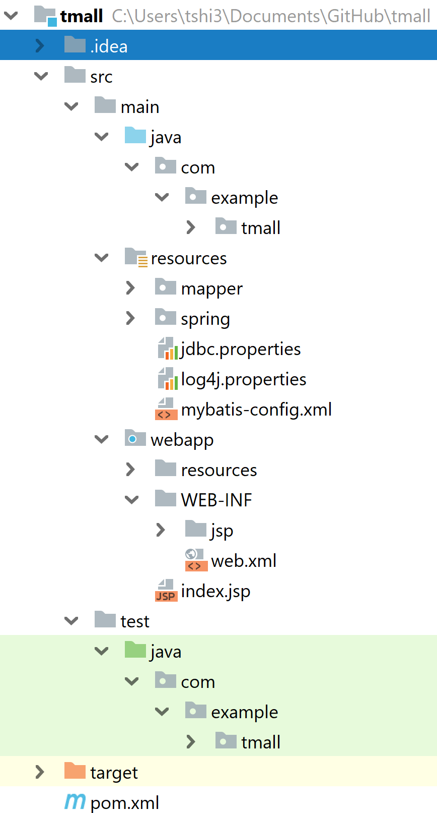

<!DOCTYPE html>
<html>
<head><meta name="generator" content="Hexo 3.8.0">
  <!-- hexo-inject:begin --><!-- hexo-inject:end --><meta charset="utf-8">
  

  
  <title>SSM Project - An On-line Shopping Website (3-1) | TongTong Shi&#39;s Blog</title>
  <meta name="viewport" content="width=device-width, initial-scale=1, maximum-scale=1">
  <meta name="description" content="Part 3 - 1. Project Configuration In this post, the steps of configuring the project is introduced.">
<meta name="keywords" content="SSM,Spring,SpringMVC,MyBatis">
<meta property="og:type" content="article">
<meta property="og:title" content="SSM Project - An On-line Shopping Website (3-1)">
<meta property="og:url" content="http://yoursite.com/2019/05/21/tmall-backend-config/index.html">
<meta property="og:site_name" content="TongTong Shi&#39;s Blog">
<meta property="og:description" content="Part 3 - 1. Project Configuration In this post, the steps of configuring the project is introduced.">
<meta property="og:locale" content="default">
<meta property="og:image" content="http://yoursite.com/2019/05/21/tmall-backend-config/projectdirectory.png">
<meta property="og:updated_time" content="2019-05-23T16:20:58.923Z">
<meta name="twitter:card" content="summary">
<meta name="twitter:title" content="SSM Project - An On-line Shopping Website (3-1)">
<meta name="twitter:description" content="Part 3 - 1. Project Configuration In this post, the steps of configuring the project is introduced.">
<meta name="twitter:image" content="http://yoursite.com/2019/05/21/tmall-backend-config/projectdirectory.png">
  
    <link rel="alternate" href="/atom.xml" title="TongTong Shi&#39;s Blog" type="application/atom+xml">
  
  
    <link rel="icon" href="/favicon.png">
  
  
    <link href="//fonts.googleapis.com/css?family=Source+Code+Pro" rel="stylesheet" type="text/css">
  
  <link rel="stylesheet" href="/css/style.css"><!-- hexo-inject:begin --><!-- hexo-inject:end -->
</head>
</html>
<body>
  <!-- hexo-inject:begin --><!-- hexo-inject:end --><div id="container">
    <div id="wrap">
      <header id="header">
  <div id="banner"></div>
  <div id="header-outer" class="outer">
    <div id="header-title" class="inner">
      <h1 id="logo-wrap">
        <a href="/" id="logo">TongTong Shi&#39;s Blog</a>
      </h1>
      
    </div>
    <div id="header-inner" class="inner">
      <nav id="main-nav">
        <a id="main-nav-toggle" class="nav-icon"></a>
        
          <a class="main-nav-link" href="/">Home</a>
        
          <a class="main-nav-link" href="/archives">Archives</a>
        
      </nav>
      <nav id="sub-nav">
        
          <a id="nav-rss-link" class="nav-icon" href="/atom.xml" title="RSS Feed"></a>
        
        <a id="nav-search-btn" class="nav-icon" title="Search"></a>
      </nav>
      <div id="search-form-wrap">
        <form action="//google.com/search" method="get" accept-charset="UTF-8" class="search-form"><input type="search" name="q" class="search-form-input" placeholder="Search"><button type="submit" class="search-form-submit">&#xF002;</button><input type="hidden" name="sitesearch" value="http://yoursite.com"></form>
      </div>
    </div>
  </div>
</header>
      <div class="outer">
        <section id="main"><article id="post-tmall-backend-config" class="article article-type-post" itemscope itemprop="blogPost">
  <div class="article-meta">
    <a href="/2019/05/21/tmall-backend-config/" class="article-date">
  <time datetime="2019-05-21T19:12:53.000Z" itemprop="datePublished">2019-05-21</time>
</a>
    
  </div>
  <div class="article-inner">
    
    
      <header class="article-header">
        
  
    <h1 class="article-title" itemprop="name">
      SSM Project - An On-line Shopping Website (3-1)
    </h1>
  

      </header>
    
    <div class="article-entry" itemprop="articleBody">
      
        <h1 id="part-3-1-project-configuration"><a class="markdownIt-Anchor" href="#part-3-1-project-configuration"></a> Part 3 - 1. Project Configuration</h1>
<p>In this post, the steps of configuring the project is introduced.</p>
<a id="more"></a>
<h2 id="step-1-create-a-project-with-required-directory-structure"><a class="markdownIt-Anchor" href="#step-1-create-a-project-with-required-directory-structure"></a> Step 1: Create a project with required directory structure</h2>

<p>The important folders include <code>sources root</code> and <code>resources root</code></p>
<h2 id="step-2-import-dependencies-in-pomxml"><a class="markdownIt-Anchor" href="#step-2-import-dependencies-in-pomxml"></a> Step 2: Import dependencies in pom.xml</h2>
<p>Include junit, mybatis, mybits-spring, mybatis-generator-core, mysql-connector-java, c3p0, spring-context, spring-test, spring-beans, spring-webmvc, spring-jdbc, spring-aspects, jstl, javax.servelt-api, jsqlparser, log4j, commons-logging, commons-fileupload, commons-io, commons-lang, aopalliance.<br>
Note: the versions of these dependencies may have conflicts.<br>
The code is as follows.</p>
<details>
<summary>CLICK ME</summary>
<figure class="highlight xml"><table><tr><td class="gutter"><pre><span class="line">1</span><br><span class="line">2</span><br><span class="line">3</span><br><span class="line">4</span><br><span class="line">5</span><br><span class="line">6</span><br><span class="line">7</span><br><span class="line">8</span><br><span class="line">9</span><br><span class="line">10</span><br><span class="line">11</span><br><span class="line">12</span><br><span class="line">13</span><br><span class="line">14</span><br><span class="line">15</span><br><span class="line">16</span><br><span class="line">17</span><br><span class="line">18</span><br><span class="line">19</span><br><span class="line">20</span><br><span class="line">21</span><br><span class="line">22</span><br><span class="line">23</span><br><span class="line">24</span><br><span class="line">25</span><br><span class="line">26</span><br><span class="line">27</span><br><span class="line">28</span><br><span class="line">29</span><br><span class="line">30</span><br><span class="line">31</span><br><span class="line">32</span><br><span class="line">33</span><br><span class="line">34</span><br><span class="line">35</span><br><span class="line">36</span><br><span class="line">37</span><br><span class="line">38</span><br><span class="line">39</span><br><span class="line">40</span><br><span class="line">41</span><br><span class="line">42</span><br><span class="line">43</span><br><span class="line">44</span><br><span class="line">45</span><br><span class="line">46</span><br><span class="line">47</span><br><span class="line">48</span><br><span class="line">49</span><br><span class="line">50</span><br><span class="line">51</span><br><span class="line">52</span><br><span class="line">53</span><br><span class="line">54</span><br><span class="line">55</span><br><span class="line">56</span><br><span class="line">57</span><br><span class="line">58</span><br><span class="line">59</span><br><span class="line">60</span><br><span class="line">61</span><br><span class="line">62</span><br><span class="line">63</span><br><span class="line">64</span><br><span class="line">65</span><br><span class="line">66</span><br><span class="line">67</span><br><span class="line">68</span><br><span class="line">69</span><br><span class="line">70</span><br><span class="line">71</span><br><span class="line">72</span><br><span class="line">73</span><br><span class="line">74</span><br><span class="line">75</span><br><span class="line">76</span><br><span class="line">77</span><br><span class="line">78</span><br><span class="line">79</span><br><span class="line">80</span><br><span class="line">81</span><br><span class="line">82</span><br><span class="line">83</span><br><span class="line">84</span><br><span class="line">85</span><br><span class="line">86</span><br><span class="line">87</span><br><span class="line">88</span><br><span class="line">89</span><br><span class="line">90</span><br><span class="line">91</span><br><span class="line">92</span><br><span class="line">93</span><br><span class="line">94</span><br><span class="line">95</span><br><span class="line">96</span><br><span class="line">97</span><br><span class="line">98</span><br><span class="line">99</span><br><span class="line">100</span><br><span class="line">101</span><br><span class="line">102</span><br><span class="line">103</span><br><span class="line">104</span><br><span class="line">105</span><br><span class="line">106</span><br><span class="line">107</span><br><span class="line">108</span><br><span class="line">109</span><br><span class="line">110</span><br><span class="line">111</span><br><span class="line">112</span><br><span class="line">113</span><br><span class="line">114</span><br><span class="line">115</span><br><span class="line">116</span><br><span class="line">117</span><br><span class="line">118</span><br><span class="line">119</span><br><span class="line">120</span><br><span class="line">121</span><br><span class="line">122</span><br><span class="line">123</span><br><span class="line">124</span><br><span class="line">125</span><br><span class="line">126</span><br><span class="line">127</span><br><span class="line">128</span><br><span class="line">129</span><br><span class="line">130</span><br><span class="line">131</span><br><span class="line">132</span><br><span class="line">133</span><br><span class="line">134</span><br><span class="line">135</span><br><span class="line">136</span><br><span class="line">137</span><br><span class="line">138</span><br><span class="line">139</span><br><span class="line">140</span><br><span class="line">141</span><br><span class="line">142</span><br><span class="line">143</span><br><span class="line">144</span><br><span class="line">145</span><br><span class="line">146</span><br><span class="line">147</span><br><span class="line">148</span><br><span class="line">149</span><br><span class="line">150</span><br><span class="line">151</span><br><span class="line">152</span><br><span class="line">153</span><br><span class="line">154</span><br><span class="line">155</span><br><span class="line">156</span><br><span class="line">157</span><br><span class="line">158</span><br><span class="line">159</span><br><span class="line">160</span><br><span class="line">161</span><br><span class="line">162</span><br><span class="line">163</span><br><span class="line">164</span><br><span class="line">165</span><br><span class="line">166</span><br><span class="line">167</span><br><span class="line">168</span><br><span class="line">169</span><br><span class="line">170</span><br><span class="line">171</span><br><span class="line">172</span><br><span class="line">173</span><br><span class="line">174</span><br><span class="line">175</span><br><span class="line">176</span><br><span class="line">177</span><br><span class="line">178</span><br><span class="line">179</span><br><span class="line">180</span><br><span class="line">181</span><br><span class="line">182</span><br><span class="line">183</span><br><span class="line">184</span><br><span class="line">185</span><br><span class="line">186</span><br><span class="line">187</span><br><span class="line">188</span><br><span class="line">189</span><br><span class="line">190</span><br><span class="line">191</span><br><span class="line">192</span><br><span class="line">193</span><br><span class="line">194</span><br><span class="line">195</span><br><span class="line">196</span><br><span class="line">197</span><br><span class="line">198</span><br><span class="line">199</span><br><span class="line">200</span><br><span class="line">201</span><br><span class="line">202</span><br><span class="line">203</span><br><span class="line">204</span><br><span class="line">205</span><br><span class="line">206</span><br><span class="line">207</span><br><span class="line">208</span><br><span class="line">209</span><br><span class="line">210</span><br><span class="line">211</span><br><span class="line">212</span><br><span class="line">213</span><br><span class="line">214</span><br><span class="line">215</span><br><span class="line">216</span><br><span class="line">217</span><br><span class="line">218</span><br><span class="line">219</span><br><span class="line">220</span><br><span class="line">221</span><br><span class="line">222</span><br><span class="line">223</span><br><span class="line">224</span><br><span class="line">225</span><br><span class="line">226</span><br><span class="line">227</span><br><span class="line">228</span><br><span class="line">229</span><br></pre></td><td class="code"><pre><span class="line"><span class="meta">&lt;?xml version="1.0" encoding="UTF-8"?&gt;</span></span><br><span class="line"></span><br><span class="line"><span class="tag">&lt;<span class="name">project</span> <span class="attr">xmlns</span>=<span class="string">"http://maven.apache.org/POM/4.0.0"</span> <span class="attr">xmlns:xsi</span>=<span class="string">"http://www.w3.org/2001/XMLSchema-instance"</span></span></span><br><span class="line"><span class="tag">  <span class="attr">xsi:schemaLocation</span>=<span class="string">"http://maven.apache.org/POM/4.0.0 http://maven.apache.org/xsd/maven-4.0.0.xsd"</span>&gt;</span></span><br><span class="line">  <span class="tag">&lt;<span class="name">modelVersion</span>&gt;</span>4.0.0<span class="tag">&lt;/<span class="name">modelVersion</span>&gt;</span></span><br><span class="line"></span><br><span class="line">  <span class="tag">&lt;<span class="name">groupId</span>&gt;</span>com.example.tmall<span class="tag">&lt;/<span class="name">groupId</span>&gt;</span></span><br><span class="line">  <span class="tag">&lt;<span class="name">artifactId</span>&gt;</span>tmall<span class="tag">&lt;/<span class="name">artifactId</span>&gt;</span></span><br><span class="line">  <span class="tag">&lt;<span class="name">version</span>&gt;</span>1.0-SNAPSHOT<span class="tag">&lt;/<span class="name">version</span>&gt;</span></span><br><span class="line">  <span class="tag">&lt;<span class="name">packaging</span>&gt;</span>war<span class="tag">&lt;/<span class="name">packaging</span>&gt;</span></span><br><span class="line"></span><br><span class="line">  <span class="tag">&lt;<span class="name">properties</span>&gt;</span></span><br><span class="line">    <span class="tag">&lt;<span class="name">spring.version</span>&gt;</span>4.1.3.RELEASE<span class="tag">&lt;/<span class="name">spring.version</span>&gt;</span></span><br><span class="line">    <span class="tag">&lt;<span class="name">pagehelper.version</span>&gt;</span>5.1.2-beta<span class="tag">&lt;/<span class="name">pagehelper.version</span>&gt;</span></span><br><span class="line">    <span class="tag">&lt;<span class="name">mysql.version</span>&gt;</span>5.1.47<span class="tag">&lt;/<span class="name">mysql.version</span>&gt;</span></span><br><span class="line">    <span class="tag">&lt;<span class="name">mybatis.spring.version</span>&gt;</span>1.3.1<span class="tag">&lt;/<span class="name">mybatis.spring.version</span>&gt;</span></span><br><span class="line">    <span class="tag">&lt;<span class="name">mybatis.version</span>&gt;</span>3.4.2<span class="tag">&lt;/<span class="name">mybatis.version</span>&gt;</span></span><br><span class="line">    <span class="tag">&lt;<span class="name">junit.version</span>&gt;</span>4.12<span class="tag">&lt;/<span class="name">junit.version</span>&gt;</span></span><br><span class="line">    <span class="tag">&lt;<span class="name">jstl.version</span>&gt;</span>1.2<span class="tag">&lt;/<span class="name">jstl.version</span>&gt;</span></span><br><span class="line">    <span class="tag">&lt;<span class="name">jsqlparser.version</span>&gt;</span>1.0<span class="tag">&lt;/<span class="name">jsqlparser.version</span>&gt;</span></span><br><span class="line">    <span class="tag">&lt;<span class="name">jackson.version</span>&gt;</span>1.2.7<span class="tag">&lt;/<span class="name">jackson.version</span>&gt;</span></span><br><span class="line">    <span class="tag">&lt;<span class="name">servlet-api.version</span>&gt;</span>3.1.0<span class="tag">&lt;/<span class="name">servlet-api.version</span>&gt;</span></span><br><span class="line">    <span class="tag">&lt;<span class="name">druid.version</span>&gt;</span>1.0.18<span class="tag">&lt;/<span class="name">druid.version</span>&gt;</span></span><br><span class="line">    <span class="tag">&lt;<span class="name">log4j.version</span>&gt;</span>1.2.16<span class="tag">&lt;/<span class="name">log4j.version</span>&gt;</span></span><br><span class="line">    <span class="tag">&lt;<span class="name">commons-logging.version</span>&gt;</span>1.2<span class="tag">&lt;/<span class="name">commons-logging.version</span>&gt;</span></span><br><span class="line">    <span class="tag">&lt;<span class="name">commons-fileupload.version</span>&gt;</span>1.2.1<span class="tag">&lt;/<span class="name">commons-fileupload.version</span>&gt;</span></span><br><span class="line">    <span class="tag">&lt;<span class="name">commons-io.version</span>&gt;</span>1.3.2<span class="tag">&lt;/<span class="name">commons-io.version</span>&gt;</span></span><br><span class="line">    <span class="tag">&lt;<span class="name">commons-lang.version</span>&gt;</span>2.6<span class="tag">&lt;/<span class="name">commons-lang.version</span>&gt;</span></span><br><span class="line">    <span class="tag">&lt;<span class="name">aopalliance.version</span>&gt;</span>1.0<span class="tag">&lt;/<span class="name">aopalliance.version</span>&gt;</span></span><br><span class="line">    <span class="tag">&lt;<span class="name">mybatis-generator.version</span>&gt;</span>1.3.5<span class="tag">&lt;/<span class="name">mybatis-generator.version</span>&gt;</span></span><br><span class="line">  <span class="tag">&lt;/<span class="name">properties</span>&gt;</span></span><br><span class="line"></span><br><span class="line">  <span class="tag">&lt;<span class="name">dependencies</span>&gt;</span></span><br><span class="line"></span><br><span class="line">    <span class="tag">&lt;<span class="name">dependency</span>&gt;</span></span><br><span class="line">      <span class="tag">&lt;<span class="name">groupId</span>&gt;</span>junit<span class="tag">&lt;/<span class="name">groupId</span>&gt;</span></span><br><span class="line">      <span class="tag">&lt;<span class="name">artifactId</span>&gt;</span>junit<span class="tag">&lt;/<span class="name">artifactId</span>&gt;</span></span><br><span class="line">      <span class="tag">&lt;<span class="name">version</span>&gt;</span>$&#123;junit.version&#125;<span class="tag">&lt;/<span class="name">version</span>&gt;</span></span><br><span class="line">    <span class="tag">&lt;/<span class="name">dependency</span>&gt;</span></span><br><span class="line"></span><br><span class="line">    <span class="tag">&lt;<span class="name">dependency</span>&gt;</span></span><br><span class="line">      <span class="tag">&lt;<span class="name">groupId</span>&gt;</span>org.mybatis<span class="tag">&lt;/<span class="name">groupId</span>&gt;</span></span><br><span class="line">      <span class="tag">&lt;<span class="name">artifactId</span>&gt;</span>mybatis<span class="tag">&lt;/<span class="name">artifactId</span>&gt;</span></span><br><span class="line">      <span class="tag">&lt;<span class="name">version</span>&gt;</span>$&#123;mybatis.version&#125;<span class="tag">&lt;/<span class="name">version</span>&gt;</span></span><br><span class="line">    <span class="tag">&lt;/<span class="name">dependency</span>&gt;</span></span><br><span class="line"></span><br><span class="line">    <span class="tag">&lt;<span class="name">dependency</span>&gt;</span></span><br><span class="line">      <span class="tag">&lt;<span class="name">groupId</span>&gt;</span>org.mybatis<span class="tag">&lt;/<span class="name">groupId</span>&gt;</span></span><br><span class="line">      <span class="tag">&lt;<span class="name">artifactId</span>&gt;</span>mybatis-spring<span class="tag">&lt;/<span class="name">artifactId</span>&gt;</span></span><br><span class="line">      <span class="tag">&lt;<span class="name">version</span>&gt;</span>$&#123;mybatis.spring.version&#125;<span class="tag">&lt;/<span class="name">version</span>&gt;</span></span><br><span class="line">    <span class="tag">&lt;/<span class="name">dependency</span>&gt;</span></span><br><span class="line"></span><br><span class="line">    <span class="tag">&lt;<span class="name">dependency</span>&gt;</span></span><br><span class="line">      <span class="tag">&lt;<span class="name">groupId</span>&gt;</span>mysql<span class="tag">&lt;/<span class="name">groupId</span>&gt;</span></span><br><span class="line">      <span class="tag">&lt;<span class="name">artifactId</span>&gt;</span>mysql-connector-java<span class="tag">&lt;/<span class="name">artifactId</span>&gt;</span></span><br><span class="line">      <span class="tag">&lt;<span class="name">version</span>&gt;</span>$&#123;mysql.version&#125;<span class="tag">&lt;/<span class="name">version</span>&gt;</span></span><br><span class="line">    <span class="tag">&lt;/<span class="name">dependency</span>&gt;</span></span><br><span class="line"></span><br><span class="line">    <span class="comment">&lt;!-- https://mvnrepository.com/artifact/c3p0/c3p0 --&gt;</span></span><br><span class="line">    <span class="tag">&lt;<span class="name">dependency</span>&gt;</span></span><br><span class="line">      <span class="tag">&lt;<span class="name">groupId</span>&gt;</span>c3p0<span class="tag">&lt;/<span class="name">groupId</span>&gt;</span></span><br><span class="line">      <span class="tag">&lt;<span class="name">artifactId</span>&gt;</span>c3p0<span class="tag">&lt;/<span class="name">artifactId</span>&gt;</span></span><br><span class="line">      <span class="tag">&lt;<span class="name">version</span>&gt;</span>0.9.1.2<span class="tag">&lt;/<span class="name">version</span>&gt;</span></span><br><span class="line">    <span class="tag">&lt;/<span class="name">dependency</span>&gt;</span></span><br><span class="line"></span><br><span class="line"></span><br><span class="line">    <span class="tag">&lt;<span class="name">dependency</span>&gt;</span></span><br><span class="line">      <span class="tag">&lt;<span class="name">groupId</span>&gt;</span>org.springframework<span class="tag">&lt;/<span class="name">groupId</span>&gt;</span></span><br><span class="line">      <span class="tag">&lt;<span class="name">artifactId</span>&gt;</span>spring-context<span class="tag">&lt;/<span class="name">artifactId</span>&gt;</span></span><br><span class="line">      <span class="tag">&lt;<span class="name">version</span>&gt;</span>$&#123;spring.version&#125;<span class="tag">&lt;/<span class="name">version</span>&gt;</span></span><br><span class="line">    <span class="tag">&lt;/<span class="name">dependency</span>&gt;</span></span><br><span class="line"></span><br><span class="line">    <span class="tag">&lt;<span class="name">dependency</span>&gt;</span></span><br><span class="line">      <span class="tag">&lt;<span class="name">groupId</span>&gt;</span>org.springframework<span class="tag">&lt;/<span class="name">groupId</span>&gt;</span></span><br><span class="line">      <span class="tag">&lt;<span class="name">artifactId</span>&gt;</span>spring-test<span class="tag">&lt;/<span class="name">artifactId</span>&gt;</span></span><br><span class="line">      <span class="tag">&lt;<span class="name">version</span>&gt;</span>$&#123;spring.version&#125;<span class="tag">&lt;/<span class="name">version</span>&gt;</span></span><br><span class="line">    <span class="tag">&lt;/<span class="name">dependency</span>&gt;</span></span><br><span class="line"></span><br><span class="line">    <span class="tag">&lt;<span class="name">dependency</span>&gt;</span></span><br><span class="line">      <span class="tag">&lt;<span class="name">groupId</span>&gt;</span>org.springframework<span class="tag">&lt;/<span class="name">groupId</span>&gt;</span></span><br><span class="line">      <span class="tag">&lt;<span class="name">artifactId</span>&gt;</span>spring-beans<span class="tag">&lt;/<span class="name">artifactId</span>&gt;</span></span><br><span class="line">      <span class="tag">&lt;<span class="name">version</span>&gt;</span>$&#123;spring.version&#125;<span class="tag">&lt;/<span class="name">version</span>&gt;</span></span><br><span class="line">    <span class="tag">&lt;/<span class="name">dependency</span>&gt;</span></span><br><span class="line"></span><br><span class="line">    <span class="tag">&lt;<span class="name">dependency</span>&gt;</span></span><br><span class="line">      <span class="tag">&lt;<span class="name">groupId</span>&gt;</span>org.springframework<span class="tag">&lt;/<span class="name">groupId</span>&gt;</span></span><br><span class="line">      <span class="tag">&lt;<span class="name">artifactId</span>&gt;</span>spring-webmvc<span class="tag">&lt;/<span class="name">artifactId</span>&gt;</span></span><br><span class="line">      <span class="tag">&lt;<span class="name">version</span>&gt;</span>$&#123;spring.version&#125;<span class="tag">&lt;/<span class="name">version</span>&gt;</span></span><br><span class="line">    <span class="tag">&lt;/<span class="name">dependency</span>&gt;</span></span><br><span class="line"></span><br><span class="line">    <span class="tag">&lt;<span class="name">dependency</span>&gt;</span></span><br><span class="line">      <span class="tag">&lt;<span class="name">groupId</span>&gt;</span>org.springframework<span class="tag">&lt;/<span class="name">groupId</span>&gt;</span></span><br><span class="line">      <span class="tag">&lt;<span class="name">artifactId</span>&gt;</span>spring-jdbc<span class="tag">&lt;/<span class="name">artifactId</span>&gt;</span></span><br><span class="line">      <span class="tag">&lt;<span class="name">version</span>&gt;</span>$&#123;spring.version&#125;<span class="tag">&lt;/<span class="name">version</span>&gt;</span></span><br><span class="line">    <span class="tag">&lt;/<span class="name">dependency</span>&gt;</span></span><br><span class="line"></span><br><span class="line">    <span class="tag">&lt;<span class="name">dependency</span>&gt;</span></span><br><span class="line">      <span class="tag">&lt;<span class="name">groupId</span>&gt;</span>org.springframework<span class="tag">&lt;/<span class="name">groupId</span>&gt;</span></span><br><span class="line">      <span class="tag">&lt;<span class="name">artifactId</span>&gt;</span>spring-aspects<span class="tag">&lt;/<span class="name">artifactId</span>&gt;</span></span><br><span class="line">      <span class="tag">&lt;<span class="name">version</span>&gt;</span>$&#123;spring.version&#125;<span class="tag">&lt;/<span class="name">version</span>&gt;</span></span><br><span class="line">    <span class="tag">&lt;/<span class="name">dependency</span>&gt;</span></span><br><span class="line">    <span class="comment">&lt;!-- JSP相关 --&gt;</span></span><br><span class="line">    <span class="tag">&lt;<span class="name">dependency</span>&gt;</span></span><br><span class="line">      <span class="tag">&lt;<span class="name">groupId</span>&gt;</span>jstl<span class="tag">&lt;/<span class="name">groupId</span>&gt;</span></span><br><span class="line">      <span class="tag">&lt;<span class="name">artifactId</span>&gt;</span>jstl<span class="tag">&lt;/<span class="name">artifactId</span>&gt;</span></span><br><span class="line">      <span class="tag">&lt;<span class="name">version</span>&gt;</span>$&#123;jstl.version&#125;<span class="tag">&lt;/<span class="name">version</span>&gt;</span></span><br><span class="line">    <span class="tag">&lt;/<span class="name">dependency</span>&gt;</span></span><br><span class="line"></span><br><span class="line">    <span class="tag">&lt;<span class="name">dependency</span>&gt;</span></span><br><span class="line">      <span class="tag">&lt;<span class="name">groupId</span>&gt;</span>javax.servlet<span class="tag">&lt;/<span class="name">groupId</span>&gt;</span></span><br><span class="line">      <span class="tag">&lt;<span class="name">artifactId</span>&gt;</span>javax.servlet-api<span class="tag">&lt;/<span class="name">artifactId</span>&gt;</span></span><br><span class="line">      <span class="tag">&lt;<span class="name">version</span>&gt;</span>$&#123;servlet-api.version&#125;<span class="tag">&lt;/<span class="name">version</span>&gt;</span></span><br><span class="line">      <span class="tag">&lt;<span class="name">scope</span>&gt;</span>provided<span class="tag">&lt;/<span class="name">scope</span>&gt;</span></span><br><span class="line">    <span class="tag">&lt;/<span class="name">dependency</span>&gt;</span></span><br><span class="line"></span><br><span class="line">    <span class="comment">&lt;!-- pageHelper --&gt;</span></span><br><span class="line">    <span class="tag">&lt;<span class="name">dependency</span>&gt;</span></span><br><span class="line">      <span class="tag">&lt;<span class="name">groupId</span>&gt;</span>com.github.pagehelper<span class="tag">&lt;/<span class="name">groupId</span>&gt;</span></span><br><span class="line">      <span class="tag">&lt;<span class="name">artifactId</span>&gt;</span>pagehelper<span class="tag">&lt;/<span class="name">artifactId</span>&gt;</span></span><br><span class="line">      <span class="tag">&lt;<span class="name">version</span>&gt;</span>$&#123;pagehelper.version&#125;<span class="tag">&lt;/<span class="name">version</span>&gt;</span></span><br><span class="line">    <span class="tag">&lt;/<span class="name">dependency</span>&gt;</span></span><br><span class="line"></span><br><span class="line">    <span class="comment">&lt;!--jsqlparser--&gt;</span></span><br><span class="line">    <span class="tag">&lt;<span class="name">dependency</span>&gt;</span></span><br><span class="line">      <span class="tag">&lt;<span class="name">groupId</span>&gt;</span>com.github.jsqlparser<span class="tag">&lt;/<span class="name">groupId</span>&gt;</span></span><br><span class="line">      <span class="tag">&lt;<span class="name">artifactId</span>&gt;</span>jsqlparser<span class="tag">&lt;/<span class="name">artifactId</span>&gt;</span></span><br><span class="line">      <span class="tag">&lt;<span class="name">version</span>&gt;</span>$&#123;jsqlparser.version&#125;<span class="tag">&lt;/<span class="name">version</span>&gt;</span></span><br><span class="line">    <span class="tag">&lt;/<span class="name">dependency</span>&gt;</span></span><br><span class="line">    <span class="tag">&lt;<span class="name">dependency</span>&gt;</span></span><br><span class="line">      <span class="tag">&lt;<span class="name">groupId</span>&gt;</span>log4j<span class="tag">&lt;/<span class="name">groupId</span>&gt;</span></span><br><span class="line">      <span class="tag">&lt;<span class="name">artifactId</span>&gt;</span>log4j<span class="tag">&lt;/<span class="name">artifactId</span>&gt;</span></span><br><span class="line">      <span class="tag">&lt;<span class="name">version</span>&gt;</span>$&#123;log4j.version&#125;<span class="tag">&lt;/<span class="name">version</span>&gt;</span></span><br><span class="line">    <span class="tag">&lt;/<span class="name">dependency</span>&gt;</span></span><br><span class="line"></span><br><span class="line">    <span class="tag">&lt;<span class="name">dependency</span>&gt;</span></span><br><span class="line">      <span class="tag">&lt;<span class="name">groupId</span>&gt;</span>commons-logging<span class="tag">&lt;/<span class="name">groupId</span>&gt;</span></span><br><span class="line">      <span class="tag">&lt;<span class="name">artifactId</span>&gt;</span>commons-logging<span class="tag">&lt;/<span class="name">artifactId</span>&gt;</span></span><br><span class="line">      <span class="tag">&lt;<span class="name">version</span>&gt;</span>$&#123;commons-logging.version&#125;<span class="tag">&lt;/<span class="name">version</span>&gt;</span></span><br><span class="line">    <span class="tag">&lt;/<span class="name">dependency</span>&gt;</span></span><br><span class="line"></span><br><span class="line">    <span class="tag">&lt;<span class="name">dependency</span>&gt;</span></span><br><span class="line">      <span class="tag">&lt;<span class="name">groupId</span>&gt;</span>commons-fileupload<span class="tag">&lt;/<span class="name">groupId</span>&gt;</span></span><br><span class="line">      <span class="tag">&lt;<span class="name">artifactId</span>&gt;</span>commons-fileupload<span class="tag">&lt;/<span class="name">artifactId</span>&gt;</span></span><br><span class="line">      <span class="tag">&lt;<span class="name">version</span>&gt;</span>$&#123;commons-fileupload.version&#125;<span class="tag">&lt;/<span class="name">version</span>&gt;</span></span><br><span class="line">    <span class="tag">&lt;/<span class="name">dependency</span>&gt;</span></span><br><span class="line"></span><br><span class="line">    <span class="tag">&lt;<span class="name">dependency</span>&gt;</span></span><br><span class="line">      <span class="tag">&lt;<span class="name">groupId</span>&gt;</span>commons-io<span class="tag">&lt;/<span class="name">groupId</span>&gt;</span></span><br><span class="line">      <span class="tag">&lt;<span class="name">artifactId</span>&gt;</span>commons-io<span class="tag">&lt;/<span class="name">artifactId</span>&gt;</span></span><br><span class="line">      <span class="tag">&lt;<span class="name">version</span>&gt;</span>$&#123;commons-io.version&#125;<span class="tag">&lt;/<span class="name">version</span>&gt;</span></span><br><span class="line">    <span class="tag">&lt;/<span class="name">dependency</span>&gt;</span></span><br><span class="line"></span><br><span class="line">    <span class="tag">&lt;<span class="name">dependency</span>&gt;</span></span><br><span class="line">      <span class="tag">&lt;<span class="name">groupId</span>&gt;</span>commons-lang<span class="tag">&lt;/<span class="name">groupId</span>&gt;</span></span><br><span class="line">      <span class="tag">&lt;<span class="name">artifactId</span>&gt;</span>commons-lang<span class="tag">&lt;/<span class="name">artifactId</span>&gt;</span></span><br><span class="line">      <span class="tag">&lt;<span class="name">version</span>&gt;</span>$&#123;commons-lang.version&#125;<span class="tag">&lt;/<span class="name">version</span>&gt;</span></span><br><span class="line">    <span class="tag">&lt;/<span class="name">dependency</span>&gt;</span></span><br><span class="line"></span><br><span class="line">    <span class="tag">&lt;<span class="name">dependency</span>&gt;</span></span><br><span class="line">      <span class="tag">&lt;<span class="name">groupId</span>&gt;</span>aopalliance<span class="tag">&lt;/<span class="name">groupId</span>&gt;</span></span><br><span class="line">      <span class="tag">&lt;<span class="name">artifactId</span>&gt;</span>aopalliance<span class="tag">&lt;/<span class="name">artifactId</span>&gt;</span></span><br><span class="line">      <span class="tag">&lt;<span class="name">version</span>&gt;</span>$&#123;aopalliance.version&#125;<span class="tag">&lt;/<span class="name">version</span>&gt;</span></span><br><span class="line">    <span class="tag">&lt;/<span class="name">dependency</span>&gt;</span></span><br><span class="line"></span><br><span class="line">    <span class="tag">&lt;<span class="name">dependency</span>&gt;</span></span><br><span class="line">      <span class="tag">&lt;<span class="name">groupId</span>&gt;</span>org.mybatis.generator<span class="tag">&lt;/<span class="name">groupId</span>&gt;</span></span><br><span class="line">      <span class="tag">&lt;<span class="name">artifactId</span>&gt;</span>mybatis-generator-core<span class="tag">&lt;/<span class="name">artifactId</span>&gt;</span></span><br><span class="line">      <span class="tag">&lt;<span class="name">version</span>&gt;</span>$&#123;mybatis-generator.version&#125;<span class="tag">&lt;/<span class="name">version</span>&gt;</span></span><br><span class="line">    <span class="tag">&lt;/<span class="name">dependency</span>&gt;</span></span><br><span class="line"></span><br><span class="line">  <span class="tag">&lt;/<span class="name">dependencies</span>&gt;</span></span><br><span class="line"></span><br><span class="line">  <span class="tag">&lt;<span class="name">build</span>&gt;</span></span><br><span class="line">    <span class="tag">&lt;<span class="name">finalName</span>&gt;</span>$&#123;project.artifactId&#125;<span class="tag">&lt;/<span class="name">finalName</span>&gt;</span></span><br><span class="line">    <span class="tag">&lt;<span class="name">plugins</span>&gt;</span></span><br><span class="line">      <span class="comment">&lt;!-- 资源文件拷贝插件 --&gt;</span></span><br><span class="line">      <span class="tag">&lt;<span class="name">plugin</span>&gt;</span></span><br><span class="line">        <span class="tag">&lt;<span class="name">groupId</span>&gt;</span>org.apache.maven.plugins<span class="tag">&lt;/<span class="name">groupId</span>&gt;</span></span><br><span class="line">        <span class="tag">&lt;<span class="name">artifactId</span>&gt;</span>maven-resources-plugin<span class="tag">&lt;/<span class="name">artifactId</span>&gt;</span></span><br><span class="line">        <span class="tag">&lt;<span class="name">version</span>&gt;</span>2.7<span class="tag">&lt;/<span class="name">version</span>&gt;</span></span><br><span class="line">        <span class="tag">&lt;<span class="name">configuration</span>&gt;</span></span><br><span class="line">          <span class="tag">&lt;<span class="name">encoding</span>&gt;</span>UTF-8<span class="tag">&lt;/<span class="name">encoding</span>&gt;</span></span><br><span class="line">        <span class="tag">&lt;/<span class="name">configuration</span>&gt;</span></span><br><span class="line">      <span class="tag">&lt;/<span class="name">plugin</span>&gt;</span></span><br><span class="line">      <span class="comment">&lt;!-- java编译插件 --&gt;</span></span><br><span class="line">      <span class="tag">&lt;<span class="name">plugin</span>&gt;</span></span><br><span class="line">        <span class="tag">&lt;<span class="name">groupId</span>&gt;</span>org.apache.maven.plugins<span class="tag">&lt;/<span class="name">groupId</span>&gt;</span></span><br><span class="line">        <span class="tag">&lt;<span class="name">artifactId</span>&gt;</span>maven-compiler-plugin<span class="tag">&lt;/<span class="name">artifactId</span>&gt;</span></span><br><span class="line">        <span class="tag">&lt;<span class="name">version</span>&gt;</span>3.2<span class="tag">&lt;/<span class="name">version</span>&gt;</span></span><br><span class="line">        <span class="tag">&lt;<span class="name">configuration</span>&gt;</span></span><br><span class="line">          <span class="tag">&lt;<span class="name">source</span>&gt;</span>1.8<span class="tag">&lt;/<span class="name">source</span>&gt;</span></span><br><span class="line">          <span class="tag">&lt;<span class="name">target</span>&gt;</span>1.8<span class="tag">&lt;/<span class="name">target</span>&gt;</span></span><br><span class="line">          <span class="tag">&lt;<span class="name">encoding</span>&gt;</span>UTF-8<span class="tag">&lt;/<span class="name">encoding</span>&gt;</span></span><br><span class="line">        <span class="tag">&lt;/<span class="name">configuration</span>&gt;</span></span><br><span class="line">      <span class="tag">&lt;/<span class="name">plugin</span>&gt;</span></span><br><span class="line">    <span class="tag">&lt;/<span class="name">plugins</span>&gt;</span></span><br><span class="line">    <span class="tag">&lt;<span class="name">pluginManagement</span>&gt;</span></span><br><span class="line">      <span class="tag">&lt;<span class="name">plugins</span>&gt;</span></span><br><span class="line">        <span class="comment">&lt;!-- 配置Tomcat插件 --&gt;</span></span><br><span class="line">        <span class="tag">&lt;<span class="name">plugin</span>&gt;</span></span><br><span class="line">          <span class="tag">&lt;<span class="name">groupId</span>&gt;</span>org.apache.tomcat.maven<span class="tag">&lt;/<span class="name">groupId</span>&gt;</span></span><br><span class="line">          <span class="tag">&lt;<span class="name">artifactId</span>&gt;</span>tomcat7-maven-plugin<span class="tag">&lt;/<span class="name">artifactId</span>&gt;</span></span><br><span class="line">          <span class="tag">&lt;<span class="name">version</span>&gt;</span>2.2<span class="tag">&lt;/<span class="name">version</span>&gt;</span></span><br><span class="line">        <span class="tag">&lt;/<span class="name">plugin</span>&gt;</span></span><br><span class="line">      <span class="tag">&lt;/<span class="name">plugins</span>&gt;</span></span><br><span class="line">    <span class="tag">&lt;/<span class="name">pluginManagement</span>&gt;</span></span><br><span class="line"></span><br><span class="line">    <span class="tag">&lt;<span class="name">resources</span>&gt;</span></span><br><span class="line">      <span class="tag">&lt;<span class="name">resource</span>&gt;</span></span><br><span class="line">        <span class="tag">&lt;<span class="name">directory</span>&gt;</span>src/main/resources<span class="tag">&lt;/<span class="name">directory</span>&gt;</span></span><br><span class="line">        <span class="tag">&lt;<span class="name">includes</span>&gt;</span></span><br><span class="line">          <span class="tag">&lt;<span class="name">include</span>&gt;</span>**/*.properties<span class="tag">&lt;/<span class="name">include</span>&gt;</span></span><br><span class="line">          <span class="tag">&lt;<span class="name">include</span>&gt;</span>**/*.xml<span class="tag">&lt;/<span class="name">include</span>&gt;</span></span><br><span class="line">          <span class="tag">&lt;<span class="name">include</span>&gt;</span>**/*.tld<span class="tag">&lt;/<span class="name">include</span>&gt;</span></span><br><span class="line">        <span class="tag">&lt;/<span class="name">includes</span>&gt;</span></span><br><span class="line">        <span class="tag">&lt;<span class="name">filtering</span>&gt;</span>false<span class="tag">&lt;/<span class="name">filtering</span>&gt;</span></span><br><span class="line">      <span class="tag">&lt;/<span class="name">resource</span>&gt;</span></span><br><span class="line">      <span class="tag">&lt;<span class="name">resource</span>&gt;</span></span><br><span class="line">        <span class="tag">&lt;<span class="name">directory</span>&gt;</span>src/main/java<span class="tag">&lt;/<span class="name">directory</span>&gt;</span></span><br><span class="line">        <span class="tag">&lt;<span class="name">includes</span>&gt;</span></span><br><span class="line">          <span class="tag">&lt;<span class="name">include</span>&gt;</span>**/*.properties<span class="tag">&lt;/<span class="name">include</span>&gt;</span></span><br><span class="line">          <span class="tag">&lt;<span class="name">include</span>&gt;</span>**/*.xml<span class="tag">&lt;/<span class="name">include</span>&gt;</span></span><br><span class="line">        <span class="tag">&lt;/<span class="name">includes</span>&gt;</span></span><br><span class="line">        <span class="tag">&lt;<span class="name">filtering</span>&gt;</span>false<span class="tag">&lt;/<span class="name">filtering</span>&gt;</span></span><br><span class="line">      <span class="tag">&lt;/<span class="name">resource</span>&gt;</span></span><br><span class="line">    <span class="tag">&lt;/<span class="name">resources</span>&gt;</span></span><br><span class="line"></span><br><span class="line">  <span class="tag">&lt;/<span class="name">build</span>&gt;</span></span><br><span class="line"><span class="tag">&lt;/<span class="name">project</span>&gt;</span></span><br></pre></td></tr></table></figure>
</details>
<h2 id="step-2-configure-tomcat"><a class="markdownIt-Anchor" href="#step-2-configure-tomcat"></a> Step 2. Configure Tomcat</h2>
<p>Include <code>server</code> and <code>deployment</code>.</p>
<h2 id="step-3-config-log4j"><a class="markdownIt-Anchor" href="#step-3-config-log4j"></a> Step 3. Config Log4j</h2>
<p>Create a file named <code>Log4j.properties</code> under <code>resources</code> folder</p>
<figure class="highlight ini"><table><tr><td class="gutter"><pre><span class="line">1</span><br><span class="line">2</span><br><span class="line">3</span><br><span class="line">4</span><br><span class="line">5</span><br><span class="line">6</span><br><span class="line">7</span><br><span class="line">8</span><br></pre></td><td class="code"><pre><span class="line"><span class="comment"># Global logging configuration</span></span><br><span class="line"><span class="attr">log4j.rootLogger</span>=ERROR, stdout</span><br><span class="line"><span class="comment"># MyBatis logging configuration...</span></span><br><span class="line"><span class="attr">log4j.logger.com.example.tmall</span>=TRACE</span><br><span class="line"><span class="comment"># Console output...</span></span><br><span class="line"><span class="attr">log4j.appender.stdout</span>=org.apache.log4j.ConsoleAppender</span><br><span class="line"><span class="attr">log4j.appender.stdout.layout</span>=org.apache.log4j.PatternLayout</span><br><span class="line"><span class="attr">log4j.appender.stdout.layout.ConversionPattern</span>=%<span class="number">5</span>p [%t] - %m%n</span><br></pre></td></tr></table></figure>
<h2 id="step-4-configure-jdbc"><a class="markdownIt-Anchor" href="#step-4-configure-jdbc"></a> Step 4. Configure jdbc</h2>
<p>Create a file named <code>jdbc.properties</code> under <code>resources</code> folder<br>
Specify <code>drive</code>, <code>url</code>, <code>username</code>, <code>password</code>.</p>
<figure class="highlight ini"><table><tr><td class="gutter"><pre><span class="line">1</span><br><span class="line">2</span><br><span class="line">3</span><br><span class="line">4</span><br></pre></td><td class="code"><pre><span class="line"><span class="attr">jdbc.driver</span>=com.mysql.jdbc.Driver</span><br><span class="line"><span class="attr">jdbc.url</span>=jdbc:mysql://localhost:<span class="number">3306</span>/tmall?useUnicode=<span class="literal">true</span>&amp;characterEncoding=utf8</span><br><span class="line"><span class="attr">jdbc.username</span>=root</span><br><span class="line"><span class="attr">jdbc.password</span>=</span><br></pre></td></tr></table></figure>
<h2 id="step-5-configure-mybitis"><a class="markdownIt-Anchor" href="#step-5-configure-mybitis"></a> Step 5. Configure Mybitis</h2>
<p>Include <code>useGeneratedKeys</code>, <code>useColumnLabel</code> and <code>mapUnderscoreToCamelCase</code>.</p>
<figure class="highlight xml"><table><tr><td class="gutter"><pre><span class="line">1</span><br><span class="line">2</span><br><span class="line">3</span><br><span class="line">4</span><br><span class="line">5</span><br><span class="line">6</span><br><span class="line">7</span><br><span class="line">8</span><br><span class="line">9</span><br><span class="line">10</span><br><span class="line">11</span><br><span class="line">12</span><br><span class="line">13</span><br><span class="line">14</span><br><span class="line">15</span><br><span class="line">16</span><br><span class="line">17</span><br></pre></td><td class="code"><pre><span class="line"><span class="meta">&lt;?xml version="1.0" encoding="UTF-8"?&gt;</span></span><br><span class="line"><span class="meta">&lt;!DOCTYPE configuration </span></span><br><span class="line"><span class="meta">	PUBLIC "-//mybatis.org//DTD Config 3.0//EN"</span></span><br><span class="line"><span class="meta">	"http://mybatis.org/dtd/mybatis-3-config.dtd"&gt;</span></span><br><span class="line"><span class="tag">&lt;<span class="name">configuration</span>&gt;</span></span><br><span class="line">	<span class="comment">&lt;!-- Config Properties --&gt;</span></span><br><span class="line">	<span class="tag">&lt;<span class="name">settings</span>&gt;</span></span><br><span class="line">		<span class="comment">&lt;!-- Allows JDBC support for generated keys --&gt;</span></span><br><span class="line">		<span class="tag">&lt;<span class="name">setting</span> <span class="attr">name</span>=<span class="string">"useGeneratedKeys"</span> <span class="attr">value</span>=<span class="string">"true"</span> /&gt;</span></span><br><span class="line"></span><br><span class="line">		<span class="comment">&lt;!-- Uses the column label instead of the column name --&gt;</span></span><br><span class="line">		<span class="tag">&lt;<span class="name">setting</span> <span class="attr">name</span>=<span class="string">"useColumnLabel"</span> <span class="attr">value</span>=<span class="string">"true"</span> /&gt;</span></span><br><span class="line"></span><br><span class="line">		<span class="comment">&lt;!-- Enable sutomatic mapping from classic database column names A_COLUMN to camel case classic java property names aColumn--&gt;</span></span><br><span class="line">		<span class="tag">&lt;<span class="name">setting</span> <span class="attr">name</span>=<span class="string">"mapUnderscoreToCamelCase"</span> <span class="attr">value</span>=<span class="string">"true"</span> /&gt;</span></span><br><span class="line">	<span class="tag">&lt;/<span class="name">settings</span>&gt;</span></span><br><span class="line"><span class="tag">&lt;/<span class="name">configuration</span>&gt;</span></span><br></pre></td></tr></table></figure>
<h2 id="step-6-configure-spring-jdbc-connection"><a class="markdownIt-Anchor" href="#step-6-configure-spring-jdbc-connection"></a> Step 6. Configure Spring JDBC Connection</h2>
<p>We create a spring configuration file named <code>spring-dao.xml</code> under <code>/resources/spring</code> folder.<br>
In this file, we mainly config spring jdbc.</p>
<ul>
<li><strong>6.1:</strong> Add context schema in the head line, i.e.</li>
</ul>
<figure class="highlight avrasm"><table><tr><td class="gutter"><pre><span class="line">1</span><br></pre></td><td class="code"><pre><span class="line"><span class="symbol">xmlns:</span>context=<span class="string">"http://www.springframework.org/schema/context"</span></span><br></pre></td></tr></table></figure>
<ul>
<li>Import basic jdbc configuration file, i.e. <code>jdbc.properties</code></li>
</ul>
<figure class="highlight routeros"><table><tr><td class="gutter"><pre><span class="line">1</span><br></pre></td><td class="code"><pre><span class="line">&lt;context:property-placeholder <span class="attribute">location</span>=<span class="string">"classpath:jdbc.properties"</span>/&gt;</span><br></pre></td></tr></table></figure>
<ul>
<li><strong>6.2:</strong> Configure jdbc connection pool. To be specific, create a bean named <code>dataSource</code>, where we set properties of <code>c3p0</code> connection pool.</li>
</ul>
<p>The most straightforward way to create a <code>c3p0 pooling DataSource</code> is to <strong>instantiate an instance</strong> of <code>com.mchange.v2.c3p0.ComboPooledDataSource</code>. This is a <strong>JavaBean-style class</strong> with a public, no-arg constructor, but before you use the DataSource, you’ll have to be sure to <strong>set at least the property jdbcUrl</strong>. You may also want to <strong>set user and password</strong>, and, if you use an old-style JDBC driver that you will not externally preload, you should <strong>set the driverClass</strong>.</p>
<figure class="highlight xml"><table><tr><td class="gutter"><pre><span class="line">1</span><br><span class="line">2</span><br><span class="line">3</span><br><span class="line">4</span><br><span class="line">5</span><br><span class="line">6</span><br><span class="line">7</span><br><span class="line">8</span><br><span class="line">9</span><br><span class="line">10</span><br><span class="line">11</span><br><span class="line">12</span><br><span class="line">13</span><br><span class="line">14</span><br><span class="line">15</span><br><span class="line">16</span><br><span class="line">17</span><br><span class="line">18</span><br><span class="line">19</span><br></pre></td><td class="code"><pre><span class="line"><span class="tag">&lt;<span class="name">bean</span> <span class="attr">id</span>=<span class="string">"dataSource"</span> <span class="attr">class</span>=<span class="string">"com.mchange.v2.c3p0.ComboPooledDataSource"</span>&gt;</span></span><br><span class="line">	<span class="comment">&lt;!--basic jdbc properties--&gt;</span></span><br><span class="line">	<span class="tag">&lt;<span class="name">property</span> <span class="attr">name</span>=<span class="string">"driverClass"</span> <span class="attr">value</span>=<span class="string">"$&#123;jdbc.driver&#125;"</span>/&gt;</span></span><br><span class="line">	<span class="tag">&lt;<span class="name">property</span> <span class="attr">name</span>=<span class="string">"jdbcUrl"</span> <span class="attr">value</span>=<span class="string">"$&#123;jdbc.url&#125;"</span>/&gt;</span></span><br><span class="line">	<span class="tag">&lt;<span class="name">property</span> <span class="attr">name</span>=<span class="string">"user"</span> <span class="attr">value</span>=<span class="string">"$&#123;jdbc.username&#125;"</span>/&gt;</span></span><br><span class="line">	<span class="tag">&lt;<span class="name">property</span> <span class="attr">name</span>=<span class="string">"password"</span> <span class="attr">value</span>=<span class="string">"$&#123;jdbc.password&#125;"</span>/&gt;</span></span><br><span class="line"></span><br><span class="line">	<span class="comment">&lt;!-- basic pool configuration--&gt;</span></span><br><span class="line">	<span class="tag">&lt;<span class="name">property</span> <span class="attr">name</span>=<span class="string">"maxPoolSize"</span> <span class="attr">value</span>=<span class="string">"30"</span> /&gt;</span></span><br><span class="line">	<span class="tag">&lt;<span class="name">property</span> <span class="attr">name</span>=<span class="string">"minPoolSize"</span> <span class="attr">value</span>=<span class="string">"10"</span> /&gt;</span></span><br><span class="line"></span><br><span class="line">	<span class="comment">&lt;!-- config unresolved Transaction Handling --&gt;</span></span><br><span class="line">	<span class="comment">&lt;!-- if you wish c3p0 to allow unresolved transactional work to commit on chechin, set autoCommitOnClose to true--&gt;</span></span><br><span class="line">	<span class="tag">&lt;<span class="name">property</span> <span class="attr">name</span>=<span class="string">"autoCommitOnClose"</span> <span class="attr">value</span>=<span class="string">"false"</span> /&gt;</span></span><br><span class="line">	<span class="comment">&lt;!-- The number of milliseconds a client calling getConnection() will wait for a Connection to be checked-in or acquired when the pool is exhausted.  --&gt;</span></span><br><span class="line">	<span class="tag">&lt;<span class="name">property</span> <span class="attr">name</span>=<span class="string">"checkoutTimeout"</span> <span class="attr">value</span>=<span class="string">"10000"</span> /&gt;</span></span><br><span class="line">	<span class="comment">&lt;!-- reconnection times --&gt;</span></span><br><span class="line">	<span class="tag">&lt;<span class="name">property</span> <span class="attr">name</span>=<span class="string">"acquireRetryAttempts"</span> <span class="attr">value</span>=<span class="string">"2"</span> /&gt;</span></span><br><span class="line"><span class="tag">&lt;/<span class="name">bean</span>&gt;</span></span><br></pre></td></tr></table></figure>
<p>Why use connection pools? <a href="https://www.baeldung.com/java-connection-pooling" target="_blank" rel="noopener">link</a></p>
<a href="https://www.mchange.com/projects/c3p0/#checkoutTimeout" target="_blank" rel="noopener">c3p0 - JDBC3 Connection and Statement Pooling</a>
<ul>
<li><strong>6.3:</strong> Build a <code>SqlSessionFactory instance</code> from an XML file, set properties, e.g. <code>typeAliasesPackage</code>, <code>dataSource</code>, <code>configLocation</code>, <code>mapperLocations</code>.
<ul>
<li>typeAliasesPackage: A type alias is a shorter name for a Java type, to reduce redundante typing of fully qualified classnames. You can also specify a package where MyBatis will search for beans.</li>
<li>dataSource: configures the source of JDBC Conntection objexts using standard JDBC DataSource interface.</li>
<li>configLocation: tell MyBatis where to find configuration file.</li>
<li>mapperLocation: tell MyBatis where to find mapped SQL statements.</li>
</ul>
</li>
</ul>
<figure class="highlight xml"><table><tr><td class="gutter"><pre><span class="line">1</span><br><span class="line">2</span><br><span class="line">3</span><br><span class="line">4</span><br><span class="line">5</span><br><span class="line">6</span><br><span class="line">7</span><br><span class="line">8</span><br></pre></td><td class="code"><pre><span class="line"><span class="comment">&lt;!--Configure SessionFactory in MyBatis--&gt;</span></span><br><span class="line"><span class="tag">&lt;<span class="name">bean</span> <span class="attr">id</span>=<span class="string">"sqlSessionFactory"</span> <span class="attr">class</span>=<span class="string">"org.mybatis.spring.SqlSessionFactoryBean"</span>&gt;</span></span><br><span class="line">	<span class="tag">&lt;<span class="name">property</span> <span class="attr">name</span>=<span class="string">"typeAliasesPackage"</span> <span class="attr">value</span>=<span class="string">"com.example.tmall.entity"</span> /&gt;</span></span><br><span class="line">	<span class="tag">&lt;<span class="name">property</span> <span class="attr">name</span>=<span class="string">"dataSource"</span> <span class="attr">ref</span>=<span class="string">"dataSource"</span>/&gt;</span></span><br><span class="line">	<span class="comment">&lt;!-- Specify the configuration file of Mybatis: mybatis-config.xml --&gt;</span></span><br><span class="line">	<span class="tag">&lt;<span class="name">property</span> <span class="attr">name</span>=<span class="string">"configLocation"</span> <span class="attr">value</span>=<span class="string">"classpath:mybatis-config.xml"</span> /&gt;</span></span><br><span class="line">	<span class="tag">&lt;<span class="name">property</span> <span class="attr">name</span>=<span class="string">"mapperLocations"</span> <span class="attr">value</span>=<span class="string">"classpath:mapper/*.xml"</span>/&gt;</span></span><br><span class="line"><span class="tag">&lt;/<span class="name">bean</span>&gt;</span></span><br></pre></td></tr></table></figure>
<p>Whenever we have a <code>sqlSesstionFactory</code>, we can create <code>sqlSessions</code>. The <code>sqlSession</code> then executes <code>SQL Statements</code>.</p>
<p><strong><font size="4" color="dodgerblue">Scope and Lifecycle</font></strong></p>
<a href="http://www.mybatis.org/mybatis-3/getting-started.html" target="_blank" rel="noopener">source</a>
<p><strong><font size="3" color="dodgerblue">SqlSessionFactoryBuilder</font></strong><br>
This class can be instantiated, used and thrown away. There is no need to keep it around once you’ve created your <code>SqlSessionFactory</code>. Therefore the best scope for instances of SqlSessionFactoryBuilder is <strong>method scope</strong> (i.e. a <strong>local method variable</strong>). You can reuse the <code>SqlSessionFactoryBuilder</code> to build multiple SqlSessionFactory instances, but it’s still best not to keep it around to ensure that all of the XML parsing resources are freed up for more important things.</p>
<p><strong><font size="3" color="dodgerblue">SqlSessionFactory</font></strong><br>
Once created, the <code>SqlSessionFactory</code> should exist for the duration of your application execution. There should be little or no reason to ever dispose of it or recreate it. It’s a best practice to <strong>not</strong> rebuild the SqlSessionFactory multiple times in an application run. Therefore the best scope of SqlSessionFactory is <strong>application scope</strong>. This can be achieved a number of ways. The simplest is to use a <strong>Singleton pattern</strong> or <strong>Static Singleton pattern</strong>.</p>
<p><strong><font size="3" color="dodgerblue">SqlSession</font></strong><br>
Each <code>thread</code> should have its own instance of <code>SqlSession</code>. Instances of SqlSession are <strong>not to be shared</strong> and are not thread safe. Therefore the best scope is <strong>request or method scope</strong>. <strong>Never</strong> keep references to a SqlSession instance in a <strong>static field</strong> or even an instance field of a class. <strong>Never</strong> keep references to a SqlSession in any sort of managed scope, such as <strong>HttpSession</strong> of the Servlet framework. If you’re using a web framework of any sort, consider the SqlSession to follow a similar scope to that of an HTTP request. In other words, upon receiving an HTTP request, you can open a SqlSession, then upon returning the response, you can close it. Closing the session is very important. You should always ensure that it’s closed within a finally block.</p>
<ul>
<li><strong>6.4:</strong> Regist a mapper in spring, i.e. create a bean named <code>MapperScannerConfigurer</code>, specify <code>sqlSessionFactoryBeanName</code>, <code>basePackage</code>
<ul>
<li><code>basePackage</code>: let you set the base package for your mapper interface files.</li>
<li><code>sqlSessionFactoryBeanName</code>: specify a specific <code>sqlSessionFactory</code>.</li>
</ul>
</li>
</ul>
<figure class="highlight xml"><table><tr><td class="gutter"><pre><span class="line">1</span><br><span class="line">2</span><br><span class="line">3</span><br><span class="line">4</span><br><span class="line">5</span><br><span class="line">6</span><br><span class="line">7</span><br></pre></td><td class="code"><pre><span class="line"><span class="comment">&lt;!-- register mappers in spring --&gt;</span></span><br><span class="line"><span class="tag">&lt;<span class="name">bean</span> <span class="attr">class</span>=<span class="string">"org.mybatis.spring.mapper.MapperScannerConfigurer"</span>&gt;</span></span><br><span class="line">    <span class="comment">&lt;!-- inject sqlSessionFactory --&gt;</span></span><br><span class="line">    <span class="tag">&lt;<span class="name">property</span> <span class="attr">name</span>=<span class="string">"sqlSessionFactoryBeanName"</span> <span class="attr">value</span>=<span class="string">"sqlSessionFactory"</span> /&gt;</span></span><br><span class="line">    <span class="comment">&lt;!-- scanning for mappers --&gt;</span></span><br><span class="line">    <span class="tag">&lt;<span class="name">property</span> <span class="attr">name</span>=<span class="string">"basePackage"</span> <span class="attr">value</span>=<span class="string">"com.example.tmall.dao"</span> /&gt;</span></span><br><span class="line"><span class="tag">&lt;/<span class="name">bean</span>&gt;</span></span><br></pre></td></tr></table></figure>
<p>The whole code in <code>spring-dao.xml</code> is as follows.</p>
<details>
<summary>CLICK ME</summary>
<figure class="highlight xml"><table><tr><td class="gutter"><pre><span class="line">1</span><br><span class="line">2</span><br><span class="line">3</span><br><span class="line">4</span><br><span class="line">5</span><br><span class="line">6</span><br><span class="line">7</span><br><span class="line">8</span><br><span class="line">9</span><br><span class="line">10</span><br><span class="line">11</span><br><span class="line">12</span><br><span class="line">13</span><br><span class="line">14</span><br><span class="line">15</span><br><span class="line">16</span><br><span class="line">17</span><br><span class="line">18</span><br><span class="line">19</span><br><span class="line">20</span><br><span class="line">21</span><br><span class="line">22</span><br><span class="line">23</span><br><span class="line">24</span><br><span class="line">25</span><br><span class="line">26</span><br><span class="line">27</span><br><span class="line">28</span><br><span class="line">29</span><br><span class="line">30</span><br><span class="line">31</span><br><span class="line">32</span><br><span class="line">33</span><br><span class="line">34</span><br><span class="line">35</span><br><span class="line">36</span><br><span class="line">37</span><br><span class="line">38</span><br><span class="line">39</span><br><span class="line">40</span><br><span class="line">41</span><br><span class="line">42</span><br><span class="line">43</span><br><span class="line">44</span><br><span class="line">45</span><br><span class="line">46</span><br><span class="line">47</span><br></pre></td><td class="code"><pre><span class="line"><span class="meta">&lt;?xml version="1.0" encoding="UTF-8"?&gt;</span></span><br><span class="line"><span class="tag">&lt;<span class="name">beans</span> <span class="attr">xmlns</span>=<span class="string">"http://www.springframework.org/schema/beans"</span></span></span><br><span class="line"><span class="tag">       <span class="attr">xmlns:xsi</span>=<span class="string">"http://www.w3.org/2001/XMLSchema-instance"</span> <span class="attr">xmlns:context</span>=<span class="string">"http://www.springframework.org/schema/context"</span></span></span><br><span class="line"><span class="tag">       <span class="attr">xsi:schemaLocation</span>=<span class="string">"http://www.springframework.org/schema/beans</span></span></span><br><span class="line"><span class="tag"><span class="string">    http://www.springframework.org/schema/beans/spring-beans.xsd</span></span></span><br><span class="line"><span class="tag"><span class="string">    http://www.springframework.org/schema/context</span></span></span><br><span class="line"><span class="tag"><span class="string">    http://www.springframework.org/schema/context/spring-context.xsd"</span>&gt;</span></span><br><span class="line"></span><br><span class="line">    <span class="comment">&lt;!-- 导入数据库配置文件 --&gt;</span></span><br><span class="line">    <span class="tag">&lt;<span class="name">context:property-placeholder</span> <span class="attr">location</span>=<span class="string">"classpath:jdbc.properties"</span>/&gt;</span></span><br><span class="line">    <span class="comment">&lt;!-- 配置数据库连接池 --&gt;</span></span><br><span class="line">    <span class="tag">&lt;<span class="name">bean</span> <span class="attr">id</span>=<span class="string">"dataSource"</span> <span class="attr">class</span>=<span class="string">"com.mchange.v2.c3p0.ComboPooledDataSource"</span>&gt;</span></span><br><span class="line">        <span class="comment">&lt;!--connection pool attrs--&gt;</span></span><br><span class="line">        <span class="tag">&lt;<span class="name">property</span> <span class="attr">name</span>=<span class="string">"driverClass"</span> <span class="attr">value</span>=<span class="string">"$&#123;jdbc.driver&#125;"</span>/&gt;</span></span><br><span class="line">        <span class="tag">&lt;<span class="name">property</span> <span class="attr">name</span>=<span class="string">"jdbcUrl"</span> <span class="attr">value</span>=<span class="string">"$&#123;jdbc.url&#125;"</span>/&gt;</span></span><br><span class="line">        <span class="tag">&lt;<span class="name">property</span> <span class="attr">name</span>=<span class="string">"user"</span> <span class="attr">value</span>=<span class="string">"$&#123;jdbc.username&#125;"</span>/&gt;</span></span><br><span class="line">        <span class="tag">&lt;<span class="name">property</span> <span class="attr">name</span>=<span class="string">"password"</span> <span class="attr">value</span>=<span class="string">"$&#123;jdbc.password&#125;"</span>/&gt;</span></span><br><span class="line"></span><br><span class="line">        <span class="comment">&lt;!-- c3p0连接池的私有属性 --&gt;</span></span><br><span class="line">        <span class="tag">&lt;<span class="name">property</span> <span class="attr">name</span>=<span class="string">"maxPoolSize"</span> <span class="attr">value</span>=<span class="string">"30"</span> /&gt;</span></span><br><span class="line">        <span class="tag">&lt;<span class="name">property</span> <span class="attr">name</span>=<span class="string">"minPoolSize"</span> <span class="attr">value</span>=<span class="string">"10"</span> /&gt;</span></span><br><span class="line">        <span class="comment">&lt;!-- 关闭连接后不自动commit --&gt;</span></span><br><span class="line">        <span class="tag">&lt;<span class="name">property</span> <span class="attr">name</span>=<span class="string">"autoCommitOnClose"</span> <span class="attr">value</span>=<span class="string">"false"</span> /&gt;</span></span><br><span class="line">        <span class="comment">&lt;!-- 获取连接超时时间 --&gt;</span></span><br><span class="line">        <span class="tag">&lt;<span class="name">property</span> <span class="attr">name</span>=<span class="string">"checkoutTimeout"</span> <span class="attr">value</span>=<span class="string">"10000"</span> /&gt;</span></span><br><span class="line">        <span class="comment">&lt;!-- 当获取连接失败重试次数 --&gt;</span></span><br><span class="line">        <span class="tag">&lt;<span class="name">property</span> <span class="attr">name</span>=<span class="string">"acquireRetryAttempts"</span> <span class="attr">value</span>=<span class="string">"2"</span> /&gt;</span></span><br><span class="line">    <span class="tag">&lt;/<span class="name">bean</span>&gt;</span></span><br><span class="line"></span><br><span class="line">    <span class="comment">&lt;!--Mybatis的SessionFactory配置--&gt;</span></span><br><span class="line">    <span class="tag">&lt;<span class="name">bean</span> <span class="attr">id</span>=<span class="string">"sqlSessionFactory"</span> <span class="attr">class</span>=<span class="string">"org.mybatis.spring.SqlSessionFactoryBean"</span>&gt;</span></span><br><span class="line">        <span class="tag">&lt;<span class="name">property</span> <span class="attr">name</span>=<span class="string">"typeAliasesPackage"</span> <span class="attr">value</span>=<span class="string">"com.example.tmall.entity"</span> /&gt;</span></span><br><span class="line">        <span class="tag">&lt;<span class="name">property</span> <span class="attr">name</span>=<span class="string">"dataSource"</span> <span class="attr">ref</span>=<span class="string">"dataSource"</span>/&gt;</span></span><br><span class="line">        <span class="comment">&lt;!-- 配置MyBaties全局配置文件:mybatis-config.xml --&gt;</span></span><br><span class="line">        <span class="tag">&lt;<span class="name">property</span> <span class="attr">name</span>=<span class="string">"configLocation"</span> <span class="attr">value</span>=<span class="string">"classpath:mybatis-config.xml"</span> /&gt;</span></span><br><span class="line">        <span class="tag">&lt;<span class="name">property</span> <span class="attr">name</span>=<span class="string">"mapperLocations"</span> <span class="attr">value</span>=<span class="string">"classpath:mapper/*.xml"</span>/&gt;</span></span><br><span class="line">    <span class="tag">&lt;/<span class="name">bean</span>&gt;</span></span><br><span class="line"></span><br><span class="line">    <span class="comment">&lt;!-- 3.配置扫描Dao接口包，动态实现Dao接口，注入到spring容器中 --&gt;</span></span><br><span class="line">    <span class="tag">&lt;<span class="name">bean</span> <span class="attr">class</span>=<span class="string">"org.mybatis.spring.mapper.MapperScannerConfigurer"</span>&gt;</span></span><br><span class="line">        <span class="comment">&lt;!-- 注入sqlSessionFactory --&gt;</span></span><br><span class="line">        <span class="tag">&lt;<span class="name">property</span> <span class="attr">name</span>=<span class="string">"sqlSessionFactoryBeanName"</span> <span class="attr">value</span>=<span class="string">"sqlSessionFactory"</span> /&gt;</span></span><br><span class="line">        <span class="comment">&lt;!-- 给出需要扫描Dao接口包 --&gt;</span></span><br><span class="line">        <span class="tag">&lt;<span class="name">property</span> <span class="attr">name</span>=<span class="string">"basePackage"</span> <span class="attr">value</span>=<span class="string">"com.example.tmall.dao"</span> /&gt;</span></span><br><span class="line">    <span class="tag">&lt;/<span class="name">bean</span>&gt;</span></span><br><span class="line"></span><br><span class="line"><span class="tag">&lt;/<span class="name">beans</span>&gt;</span></span><br></pre></td></tr></table></figure>
</details>
<h2 id="step-7-spring-service-configuration"><a class="markdownIt-Anchor" href="#step-7-spring-service-configuration"></a> Step 7. spring-service configuration</h2>
<ul>
<li><strong>7.1:</strong> Add context and transaction (i.e tx) schema in the head line, i.e.</li>
</ul>
<figure class="highlight xml"><table><tr><td class="gutter"><pre><span class="line">1</span><br><span class="line">2</span><br></pre></td><td class="code"><pre><span class="line">xmlns:context="http://www.springframework.org/schema/context"</span><br><span class="line">xmlns:tx="http://www.springframework.org/schema/tx</span><br></pre></td></tr></table></figure>
<ul>
<li><strong>7.2:</strong> Configure scanner location</li>
</ul>
<figure class="highlight xml"><table><tr><td class="gutter"><pre><span class="line">1</span><br></pre></td><td class="code"><pre><span class="line"><span class="tag">&lt;<span class="name">context:component-scan</span> <span class="attr">base-package</span>=<span class="string">"com.example.tmall.service"</span> /&gt;</span></span><br></pre></td></tr></table></figure>
<ul>
<li><strong>7.3:</strong> Configure <code>transactionManager</code><br>
When using transaction management in Spring, we need to define <code>transactionManager</code>. Typically we can define this through dependency injection. The related bean definition will then have a reference to the <code>DataSource</code> definition.</li>
</ul>
<figure class="highlight xml"><table><tr><td class="gutter"><pre><span class="line">1</span><br><span class="line">2</span><br><span class="line">3</span><br><span class="line">4</span><br></pre></td><td class="code"><pre><span class="line"><span class="tag">&lt;<span class="name">bean</span> <span class="attr">id</span>=<span class="string">"transactionManager"</span> <span class="attr">class</span>=<span class="string">"org.springframework.jdbc.datasource.DataSourceTransactionManager"</span>&gt;</span></span><br><span class="line">	<span class="comment">&lt;!-- inject DataSource --&gt;</span></span><br><span class="line">	<span class="tag">&lt;<span class="name">property</span> <span class="attr">ref</span>=<span class="string">"dataSource"</span> <span class="attr">name</span>=<span class="string">"dataSource"</span>/&gt;</span></span><br><span class="line"><span class="tag">&lt;/<span class="name">bean</span>&gt;</span></span><br></pre></td></tr></table></figure>
<p>The code is as follows.</p>
<details>
<summary>CLICK ME</summary>
<figure class="highlight xml"><table><tr><td class="gutter"><pre><span class="line">1</span><br><span class="line">2</span><br><span class="line">3</span><br><span class="line">4</span><br><span class="line">5</span><br><span class="line">6</span><br><span class="line">7</span><br><span class="line">8</span><br><span class="line">9</span><br><span class="line">10</span><br><span class="line">11</span><br><span class="line">12</span><br><span class="line">13</span><br><span class="line">14</span><br><span class="line">15</span><br><span class="line">16</span><br><span class="line">17</span><br><span class="line">18</span><br><span class="line">19</span><br><span class="line">20</span><br><span class="line">21</span><br><span class="line">22</span><br><span class="line">23</span><br><span class="line">24</span><br><span class="line">25</span><br></pre></td><td class="code"><pre><span class="line"><span class="meta">&lt;?xml version="1.0" encoding="UTF-8"?&gt;</span></span><br><span class="line"><span class="tag">&lt;<span class="name">beans</span> <span class="attr">xmlns</span>=<span class="string">"http://www.springframework.org/schema/beans"</span></span></span><br><span class="line"><span class="tag">       <span class="attr">xmlns:xsi</span>=<span class="string">"http://www.w3.org/2001/XMLSchema-instance"</span></span></span><br><span class="line"><span class="tag">       <span class="attr">xmlns:context</span>=<span class="string">"http://www.springframework.org/schema/context"</span></span></span><br><span class="line"><span class="tag">       <span class="attr">xmlns:tx</span>=<span class="string">"http://www.springframework.org/schema/tx"</span></span></span><br><span class="line"><span class="tag">       <span class="attr">xsi:schemaLocation</span>=<span class="string">"http://www.springframework.org/schema/beans</span></span></span><br><span class="line"><span class="tag"><span class="string">    http://www.springframework.org/schema/beans/spring-beans.xsd</span></span></span><br><span class="line"><span class="tag"><span class="string">    http://www.springframework.org/schema/context</span></span></span><br><span class="line"><span class="tag"><span class="string">    http://www.springframework.org/schema/context/spring-context.xsd</span></span></span><br><span class="line"><span class="tag"><span class="string">    http://www.springframework.org/schema/tx</span></span></span><br><span class="line"><span class="tag"><span class="string">    http://www.springframework.org/schema/tx/spring-tx.xsd"</span>&gt;</span></span><br><span class="line">    <span class="tag">&lt;<span class="name">import</span> <span class="attr">resource</span>=<span class="string">"classpath:/spring/spring-dao.xml"</span>/&gt;</span></span><br><span class="line">    <span class="comment">&lt;!-- 扫描service包下所有使用注解的类型 --&gt;</span></span><br><span class="line">    <span class="tag">&lt;<span class="name">context:component-scan</span> <span class="attr">base-package</span>=<span class="string">"com.example.tmall.service"</span> /&gt;</span></span><br><span class="line"></span><br><span class="line">    <span class="comment">&lt;!-- 配置事务管理器 --&gt;</span></span><br><span class="line">    <span class="tag">&lt;<span class="name">bean</span> <span class="attr">id</span>=<span class="string">"transactionManager"</span></span></span><br><span class="line"><span class="tag">          <span class="attr">class</span>=<span class="string">"org.springframework.jdbc.datasource.DataSourceTransactionManager"</span>&gt;</span></span><br><span class="line">        <span class="comment">&lt;!-- 注入数据库连接池 --&gt;</span></span><br><span class="line">        <span class="tag">&lt;<span class="name">property</span> <span class="attr">ref</span>=<span class="string">"dataSource"</span> <span class="attr">name</span>=<span class="string">"dataSource"</span>/&gt;</span></span><br><span class="line">    <span class="tag">&lt;/<span class="name">bean</span>&gt;</span></span><br><span class="line"></span><br><span class="line">    <span class="comment">&lt;!-- 配置基于注解的声明式事务 --&gt;</span></span><br><span class="line">    <span class="tag">&lt;<span class="name">tx:annotation-driven</span> <span class="attr">transaction-manager</span>=<span class="string">"transactionManager"</span> /&gt;</span></span><br><span class="line"><span class="tag">&lt;/<span class="name">beans</span>&gt;</span></span><br></pre></td></tr></table></figure>
</details>
<p><strong><font size="4" color="dodgerblue">What is transation ? </font></strong> <a href="https://www.tutorialspoint.com/spring/spring_transaction_management.htm" target="_blank" rel="noopener">source</a><br>
A database transaction is a sequence of actions that are treated as a single unit of work. These actions should either complete entirely or take no effect at all. Transaction management is an important part of RDBMS-oriented enterprise application to ensure data integrity and consistency. The concept of transactions can be described with the following four key properties described as <strong>ACID</strong> − <strong>Atomicity</strong>, <strong>Consistency</strong>, <strong>Isolation</strong>, <strong>Durability</strong>.</p>
<h2 id="step-8-spring-web-configuration-ie-springmvc-configuration"><a class="markdownIt-Anchor" href="#step-8-spring-web-configuration-ie-springmvc-configuration"></a> Step 8. Spring-web configuration, i.e. SpringMVC configuration</h2>
<ul>
<li><strong>8.1:</strong> start <code>SpringMVC annotation</code></li>
</ul>
<figure class="highlight xml"><table><tr><td class="gutter"><pre><span class="line">1</span><br></pre></td><td class="code"><pre><span class="line"><span class="tag">&lt;<span class="name">mvc:annotation-driven</span> /&gt;</span></span><br></pre></td></tr></table></figure>
<p>***mvc:annotation-driven *** is used for enabling the Spring MVC components with its default configurations. If you dont include mvc:annotation-driven also your MVC application would work if you have used the context:component-scan for creating the beans or defined the beans in your XML file. But, mvc:annotation-driven does some extra job on configuring the special beans that would not have been configured if you are not using this element in your XML file.</p>
<ul>
<li><strong>8.2:</strong> specify the location of <code>static resources</code>, including .js, .gif, .png, .css,…</li>
</ul>
<figure class="highlight xml"><table><tr><td class="gutter"><pre><span class="line">1</span><br><span class="line">2</span><br></pre></td><td class="code"><pre><span class="line"><span class="tag">&lt;<span class="name">mvc:resources</span> <span class="attr">mapping</span>=<span class="string">"/resources/**"</span> <span class="attr">location</span>=<span class="string">"/resources/"</span> /&gt;</span></span><br><span class="line"><span class="tag">&lt;<span class="name">mvc:default-servlet-handler</span> /&gt;</span></span><br></pre></td></tr></table></figure>
<p><strong>Steps to include static resources, e.g. css, js, into JSP page:</strong></p>
<ul>
<li>
<p>Put static resources like cs, js or images into this folder <code>webapp\resources</code></p>
</li>
<li>
<p>Create a <code>Spring mvc:resources</code> mapping</p>
</li>
<li>
<p>Include in JSP page via JSTL tag <code>c:url</code> or Spring tag <code>spring:url</code></p>
</li>
<li>
<p><strong>8.3:</strong> define <code>ViewResolver</code><br>
When using JSP for a view technology you can use the <code>UrlBasedViewResolver</code>. This view resolver translates a view name to a URL and hands the request over to the <code>RequestDispatcher</code> to render the view.</p>
</li>
</ul>
<figure class="highlight xml"><table><tr><td class="gutter"><pre><span class="line">1</span><br><span class="line">2</span><br><span class="line">3</span><br><span class="line">4</span><br><span class="line">5</span><br></pre></td><td class="code"><pre><span class="line"><span class="tag">&lt;<span class="name">bean</span> <span class="attr">id</span>=<span class="string">"viewResolver"</span> <span class="attr">class</span>=<span class="string">"org.springframework.web.servlet.view.InternalResourceViewResolver"</span>&gt;</span></span><br><span class="line">    <span class="tag">&lt;<span class="name">property</span> <span class="attr">name</span>=<span class="string">"viewClass"</span> <span class="attr">value</span>=<span class="string">"org.springframework.web.servlet.view.JstlView"</span>/&gt;</span></span><br><span class="line">    <span class="tag">&lt;<span class="name">property</span> <span class="attr">name</span>=<span class="string">"prefix"</span> <span class="attr">value</span>=<span class="string">"/WEB-INF/jsp/"</span>/&gt;</span></span><br><span class="line">    <span class="tag">&lt;<span class="name">property</span> <span class="attr">name</span>=<span class="string">"suffix"</span> <span class="attr">value</span>=<span class="string">".jsp"</span>/&gt;</span></span><br><span class="line"><span class="tag">&lt;/<span class="name">bean</span>&gt;</span></span><br></pre></td></tr></table></figure>
<ul>
<li><strong>8.4:</strong> define <code>multipartResolver</code></li>
</ul>
<figure class="highlight xml"><table><tr><td class="gutter"><pre><span class="line">1</span><br><span class="line">2</span><br><span class="line">3</span><br><span class="line">4</span><br><span class="line">5</span><br><span class="line">6</span><br><span class="line">7</span><br></pre></td><td class="code"><pre><span class="line"><span class="tag">&lt;<span class="name">bean</span> <span class="attr">id</span>=<span class="string">"multipartResolver"</span> </span></span><br><span class="line"><span class="tag">  <span class="attr">class</span>=<span class="string">"org.springframework.web.multipart.commons.CommonsMultipartResolver"</span>&gt;</span></span><br><span class="line">    <span class="tag">&lt;<span class="name">property</span> <span class="attr">name</span>=<span class="string">"defaultEncoding"</span> <span class="attr">value</span>=<span class="string">"utf-8"</span>&gt;</span><span class="tag">&lt;/<span class="name">property</span>&gt;</span></span><br><span class="line">    <span class="comment">&lt;!-- 1024 * 1024 * 20 = 20M --&gt;</span></span><br><span class="line">    <span class="tag">&lt;<span class="name">property</span> <span class="attr">name</span>=<span class="string">"maxUploadSize"</span> <span class="attr">value</span>=<span class="string">"20971520"</span>&gt;</span><span class="tag">&lt;/<span class="name">property</span>&gt;</span></span><br><span class="line">    <span class="tag">&lt;<span class="name">property</span> <span class="attr">name</span>=<span class="string">"maxInMemorySize"</span> <span class="attr">value</span>=<span class="string">"20971520"</span>&gt;</span><span class="tag">&lt;/<span class="name">property</span>&gt;</span></span><br><span class="line"><span class="tag">&lt;/<span class="name">bean</span>&gt;</span></span><br></pre></td></tr></table></figure>
<ul>
<li><strong>8.5:</strong> define <code>context:component-scan</code></li>
</ul>
<figure class="highlight xml"><table><tr><td class="gutter"><pre><span class="line">1</span><br></pre></td><td class="code"><pre><span class="line"><span class="tag">&lt;<span class="name">context:component-scan</span> <span class="attr">base-package</span>=<span class="string">"com.example.tmall.controller"</span> /&gt;</span></span><br></pre></td></tr></table></figure>
<p><strong>The difference between <code>&lt;context:annotation-config /&gt;</code> and <code>&lt;context:component-scan /&gt;</code></strong></p>
<p>Spring allows you to do two things: <strong>Autowiring of beans</strong> and <strong>Autodiscovery of beans</strong></p>
<ul>
<li><strong>Autowiring</strong><br>
Usually in applicationContext.xml you define beans and other beans are wired using constructor or setter methods. You can wire beans using XML or annotations. In case you use annotations, you need to activate annotations and you have to add <code>&lt;context:annotation-config /&gt;</code> in applicationContext.xml. This will simplify the structure of the tag from applicationContext.xml, because you will not have to manually wire beans (constructor or setter). You can use @Autowire annotation and the beans will be wired by type.</li>
</ul>
<p>A step forward for escaping the manual XML configuration is</p>
<ul>
<li><strong>Autodiscovery</strong><br>
Autodiscovery is simplifying the XML one step further, in the sense that you don’t even need too add the <code>&lt;bean&gt;</code> tag in applicationContext.xml. You just mark the specific beans with one of the following annotation and Spring will automatically wire the marked beans and their dependencies into the Spring container. The annotations are as follow: @Controller, @Service, @Component, @Repository. By using <code>&lt;context:component-scan&gt;</code> and pointing the base package, Spring will auto-discover and wire the components into Spring container.</li>
</ul>
<p><strong>As a conclusion:</strong></p>
<ul>
<li><code>&lt;context:annotation-config /&gt;</code> is used in order to be able to use @Autowired annotation</li>
<li><code>&lt;context:component-scan /&gt;</code> is used to determine the search of specific beans and attempt of autowiring.</li>
</ul>
<p>The code is as follows.</p>
<details>
<summary>CLICK ME</summary>
<figure class="highlight xml"><table><tr><td class="gutter"><pre><span class="line">1</span><br><span class="line">2</span><br><span class="line">3</span><br><span class="line">4</span><br><span class="line">5</span><br><span class="line">6</span><br><span class="line">7</span><br><span class="line">8</span><br><span class="line">9</span><br><span class="line">10</span><br><span class="line">11</span><br><span class="line">12</span><br><span class="line">13</span><br><span class="line">14</span><br><span class="line">15</span><br><span class="line">16</span><br><span class="line">17</span><br><span class="line">18</span><br><span class="line">19</span><br><span class="line">20</span><br><span class="line">21</span><br><span class="line">22</span><br><span class="line">23</span><br><span class="line">24</span><br><span class="line">25</span><br><span class="line">26</span><br><span class="line">27</span><br><span class="line">28</span><br><span class="line">29</span><br><span class="line">30</span><br><span class="line">31</span><br><span class="line">32</span><br><span class="line">33</span><br><span class="line">34</span><br><span class="line">35</span><br><span class="line">36</span><br><span class="line">37</span><br><span class="line">38</span><br><span class="line">39</span><br><span class="line">40</span><br><span class="line">41</span><br><span class="line">42</span><br></pre></td><td class="code"><pre><span class="line"><span class="meta">&lt;?xml version="1.0" encoding="UTF-8"?&gt;</span></span><br><span class="line"><span class="tag">&lt;<span class="name">beans</span> <span class="attr">xmlns</span>=<span class="string">"http://www.springframework.org/schema/beans"</span></span></span><br><span class="line"><span class="tag">       <span class="attr">xmlns:xsi</span>=<span class="string">"http://www.w3.org/2001/XMLSchema-instance"</span></span></span><br><span class="line"><span class="tag">       <span class="attr">xmlns:context</span>=<span class="string">"http://www.springframework.org/schema/context"</span></span></span><br><span class="line"><span class="tag">       <span class="attr">xmlns:mvc</span>=<span class="string">"http://www.springframework.org/schema/mvc"</span></span></span><br><span class="line"><span class="tag">       <span class="attr">xsi:schemaLocation</span>=<span class="string">"http://www.springframework.org/schema/beans</span></span></span><br><span class="line"><span class="tag"><span class="string">       http://www.springframework.org/schema/beans/spring-beans.xsd</span></span></span><br><span class="line"><span class="tag"><span class="string">       http://www.springframework.org/schema/context</span></span></span><br><span class="line"><span class="tag"><span class="string">       http://www.springframework.org/schema/context/spring-context.xsd</span></span></span><br><span class="line"><span class="tag"><span class="string">       http://www.springframework.org/schema/mvc</span></span></span><br><span class="line"><span class="tag"><span class="string">       http://www.springframework.org/schema/mvc/spring-mvc-3.2.xsd"</span>&gt;</span></span><br><span class="line"></span><br><span class="line"></span><br><span class="line">    <span class="comment">&lt;!-- SpringMVC Configuration--&gt;</span></span><br><span class="line">    <span class="comment">&lt;!-- 1.SpringMVC annotation driven : @Controller @Repository @Service--&gt;</span></span><br><span class="line">    <span class="tag">&lt;<span class="name">mvc:annotation-driven</span> /&gt;</span></span><br><span class="line"></span><br><span class="line">    <span class="comment">&lt;!-- 2.static resources config : mapping to the js,css file location to find static resources --&gt;</span></span><br><span class="line">    <span class="tag">&lt;<span class="name">mvc:resources</span> <span class="attr">mapping</span>=<span class="string">"/resources/**"</span> <span class="attr">location</span>=<span class="string">"/resources/"</span> /&gt;</span></span><br><span class="line">    <span class="comment">&lt;!--Use default servlet to handle static resources(Spring could recognize your file --&gt;</span></span><br><span class="line">    <span class="tag">&lt;<span class="name">mvc:default-servlet-handler</span> /&gt;</span></span><br><span class="line"></span><br><span class="line">    <span class="comment">&lt;!-- 3.View Resolver: JSP template --&gt;</span></span><br><span class="line">    <span class="tag">&lt;<span class="name">bean</span> <span class="attr">id</span>=<span class="string">"viewResolver"</span> <span class="attr">class</span>=<span class="string">"org.springframework.web.servlet.view.InternalResourceViewResolver"</span>&gt;</span></span><br><span class="line">        <span class="tag">&lt;<span class="name">property</span> <span class="attr">name</span>=<span class="string">"viewClass"</span> <span class="attr">value</span>=<span class="string">"org.springframework.web.servlet.view.JstlView"</span>/&gt;</span></span><br><span class="line">        <span class="tag">&lt;<span class="name">property</span> <span class="attr">name</span>=<span class="string">"prefix"</span> <span class="attr">value</span>=<span class="string">"/WEB-INF/jsp/"</span>/&gt;</span></span><br><span class="line">        <span class="tag">&lt;<span class="name">property</span> <span class="attr">name</span>=<span class="string">"suffix"</span> <span class="attr">value</span>=<span class="string">".jsp"</span>/&gt;</span></span><br><span class="line">    <span class="tag">&lt;/<span class="name">bean</span>&gt;</span></span><br><span class="line"></span><br><span class="line">    <span class="comment">&lt;!-- 4. multipart Resolver for upload files --&gt;</span></span><br><span class="line">    <span class="tag">&lt;<span class="name">bean</span> <span class="attr">id</span>=<span class="string">"multipartResolver"</span></span></span><br><span class="line"><span class="tag">          <span class="attr">class</span>=<span class="string">"org.springframework.web.multipart.commons.CommonsMultipartResolver"</span>&gt;</span></span><br><span class="line">        <span class="tag">&lt;<span class="name">property</span> <span class="attr">name</span>=<span class="string">"defaultEncoding"</span> <span class="attr">value</span>=<span class="string">"utf-8"</span>&gt;</span><span class="tag">&lt;/<span class="name">property</span>&gt;</span></span><br><span class="line">        <span class="comment">&lt;!-- 1024 * 1024 * 20 = 20M --&gt;</span></span><br><span class="line">        <span class="tag">&lt;<span class="name">property</span> <span class="attr">name</span>=<span class="string">"maxUploadSize"</span> <span class="attr">value</span>=<span class="string">"20971520"</span>&gt;</span><span class="tag">&lt;/<span class="name">property</span>&gt;</span></span><br><span class="line">        <span class="tag">&lt;<span class="name">property</span> <span class="attr">name</span>=<span class="string">"maxInMemorySize"</span> <span class="attr">value</span>=<span class="string">"20971520"</span>&gt;</span><span class="tag">&lt;/<span class="name">property</span>&gt;</span></span><br><span class="line">    <span class="tag">&lt;/<span class="name">bean</span>&gt;</span></span><br><span class="line"></span><br><span class="line">    <span class="comment">&lt;!-- 4.Web-related packages annotation based --&gt;</span></span><br><span class="line">    <span class="tag">&lt;<span class="name">context:component-scan</span> <span class="attr">base-package</span>=<span class="string">"com.example.tmall.controller"</span> /&gt;</span></span><br><span class="line"></span><br><span class="line"><span class="tag">&lt;/<span class="name">beans</span>&gt;</span></span><br></pre></td></tr></table></figure>
</details>
<h2 id="step-9-edit-web-xml-file"><a class="markdownIt-Anchor" href="#step-9-edit-web-xml-file"></a> Step 9. Edit web-xml file</h2>
<p>Include listener, filter, mvc-dispatcher</p>
<details>
<summary>CLICK ME To Show Code</summary>
<figure class="highlight xml"><table><tr><td class="gutter"><pre><span class="line">1</span><br><span class="line">2</span><br><span class="line">3</span><br><span class="line">4</span><br><span class="line">5</span><br><span class="line">6</span><br><span class="line">7</span><br><span class="line">8</span><br><span class="line">9</span><br><span class="line">10</span><br><span class="line">11</span><br><span class="line">12</span><br><span class="line">13</span><br><span class="line">14</span><br><span class="line">15</span><br><span class="line">16</span><br><span class="line">17</span><br><span class="line">18</span><br><span class="line">19</span><br><span class="line">20</span><br><span class="line">21</span><br><span class="line">22</span><br><span class="line">23</span><br><span class="line">24</span><br><span class="line">25</span><br><span class="line">26</span><br><span class="line">27</span><br><span class="line">28</span><br><span class="line">29</span><br><span class="line">30</span><br><span class="line">31</span><br><span class="line">32</span><br><span class="line">33</span><br><span class="line">34</span><br><span class="line">35</span><br><span class="line">36</span><br><span class="line">37</span><br><span class="line">38</span><br><span class="line">39</span><br><span class="line">40</span><br><span class="line">41</span><br><span class="line">42</span><br><span class="line">43</span><br><span class="line">44</span><br><span class="line">45</span><br></pre></td><td class="code"><pre><span class="line"><span class="tag">&lt;<span class="name">web-app</span> <span class="attr">xmlns</span>=<span class="string">"http://xmlns.jcp.org/xml/ns/javaee"</span></span></span><br><span class="line"><span class="tag">         <span class="attr">xmlns:xsi</span>=<span class="string">"http://www.w3.org/2001/XMLSchema-instance"</span></span></span><br><span class="line"><span class="tag">         <span class="attr">xsi:schemaLocation</span>=<span class="string">"http://xmlns.jcp.org/xml/ns/javaee http://xmlns.jcp.org/xml/ns/javaee/web-app_3_1.xsd"</span></span></span><br><span class="line"><span class="tag">         <span class="attr">version</span>=<span class="string">"3.1"</span>&gt;</span></span><br><span class="line"></span><br><span class="line">  <span class="tag">&lt;<span class="name">welcome-file-list</span>&gt;</span></span><br><span class="line">    <span class="tag">&lt;<span class="name">welcome-file</span>&gt;</span>index.jsp<span class="tag">&lt;/<span class="name">welcome-file</span>&gt;</span></span><br><span class="line">    <span class="tag">&lt;<span class="name">welcome-file</span>&gt;</span>index.html<span class="tag">&lt;/<span class="name">welcome-file</span>&gt;</span></span><br><span class="line">  <span class="tag">&lt;/<span class="name">welcome-file-list</span>&gt;</span></span><br><span class="line"></span><br><span class="line"></span><br><span class="line"></span><br><span class="line">  <span class="comment">&lt;!-- Spring MVC Core: Dispatcher Servlet --&gt;</span></span><br><span class="line">  <span class="tag">&lt;<span class="name">servlet</span>&gt;</span></span><br><span class="line">    <span class="tag">&lt;<span class="name">servlet-name</span>&gt;</span>spring-dispatcher<span class="tag">&lt;/<span class="name">servlet-name</span>&gt;</span></span><br><span class="line">    <span class="tag">&lt;<span class="name">servlet-class</span>&gt;</span>org.springframework.web.servlet.DispatcherServlet<span class="tag">&lt;/<span class="name">servlet-class</span>&gt;</span></span><br><span class="line">    <span class="tag">&lt;<span class="name">init-param</span>&gt;</span></span><br><span class="line">      <span class="tag">&lt;<span class="name">param-name</span>&gt;</span>contextConfigLocation<span class="tag">&lt;/<span class="name">param-name</span>&gt;</span></span><br><span class="line">      <span class="tag">&lt;<span class="name">param-value</span>&gt;</span>classpath:spring/spring-*.xml<span class="tag">&lt;/<span class="name">param-value</span>&gt;</span></span><br><span class="line">    <span class="tag">&lt;/<span class="name">init-param</span>&gt;</span></span><br><span class="line">  <span class="tag">&lt;/<span class="name">servlet</span>&gt;</span></span><br><span class="line"></span><br><span class="line">  <span class="tag">&lt;<span class="name">servlet-mapping</span>&gt;</span></span><br><span class="line">    <span class="tag">&lt;<span class="name">servlet-name</span>&gt;</span>spring-dispatcher<span class="tag">&lt;/<span class="name">servlet-name</span>&gt;</span></span><br><span class="line">    <span class="comment">&lt;!--default: matching all requests--&gt;</span></span><br><span class="line">    <span class="tag">&lt;<span class="name">url-pattern</span>&gt;</span>/<span class="tag">&lt;/<span class="name">url-pattern</span>&gt;</span></span><br><span class="line">  <span class="tag">&lt;/<span class="name">servlet-mapping</span>&gt;</span></span><br><span class="line"></span><br><span class="line"></span><br><span class="line">  <span class="comment">&lt;!--Character Encoding Filter: UTF-8 --&gt;</span></span><br><span class="line">  <span class="tag">&lt;<span class="name">filter</span>&gt;</span></span><br><span class="line">    <span class="tag">&lt;<span class="name">filter-name</span>&gt;</span>CharacterEncodingFilter<span class="tag">&lt;/<span class="name">filter-name</span>&gt;</span></span><br><span class="line">    <span class="tag">&lt;<span class="name">filter-class</span>&gt;</span>org.springframework.web.filter.CharacterEncodingFilter<span class="tag">&lt;/<span class="name">filter-class</span>&gt;</span></span><br><span class="line">    <span class="tag">&lt;<span class="name">init-param</span>&gt;</span></span><br><span class="line">      <span class="tag">&lt;<span class="name">param-name</span>&gt;</span>encoding<span class="tag">&lt;/<span class="name">param-name</span>&gt;</span></span><br><span class="line">      <span class="tag">&lt;<span class="name">param-value</span>&gt;</span>utf-8<span class="tag">&lt;/<span class="name">param-value</span>&gt;</span></span><br><span class="line">    <span class="tag">&lt;/<span class="name">init-param</span>&gt;</span></span><br><span class="line">  <span class="tag">&lt;/<span class="name">filter</span>&gt;</span></span><br><span class="line">  <span class="tag">&lt;<span class="name">filter-mapping</span>&gt;</span></span><br><span class="line">    <span class="tag">&lt;<span class="name">filter-name</span>&gt;</span>CharacterEncodingFilter<span class="tag">&lt;/<span class="name">filter-name</span>&gt;</span></span><br><span class="line">    <span class="tag">&lt;<span class="name">url-pattern</span>&gt;</span>/*<span class="tag">&lt;/<span class="name">url-pattern</span>&gt;</span></span><br><span class="line">  <span class="tag">&lt;/<span class="name">filter-mapping</span>&gt;</span></span><br><span class="line"></span><br><span class="line"></span><br><span class="line"><span class="tag">&lt;/<span class="name">web-app</span>&gt;</span></span><br></pre></td></tr></table></figure>
</details>
      
    </div>
    <footer class="article-footer">
      <a data-url="http://yoursite.com/2019/05/21/tmall-backend-config/" data-id="cjz30qqgj01gk0sve62vzuf5d" class="article-share-link">Share</a>
      
      
  <ul class="article-tag-list"><li class="article-tag-list-item"><a class="article-tag-list-link" href="/tags/MyBatis/">MyBatis</a></li><li class="article-tag-list-item"><a class="article-tag-list-link" href="/tags/SSM/">SSM</a></li><li class="article-tag-list-item"><a class="article-tag-list-link" href="/tags/Spring/">Spring</a></li><li class="article-tag-list-item"><a class="article-tag-list-link" href="/tags/SpringMVC/">SpringMVC</a></li></ul>

    </footer>
  </div>
  
    
<nav id="article-nav">
  
    <a href="/2019/05/23/leetcodeQ45/" id="article-nav-newer" class="article-nav-link-wrap">
      <strong class="article-nav-caption">Newer</strong>
      <div class="article-nav-title">
        
          Jump Game II
        
      </div>
    </a>
  
  
    <a href="/2019/05/21/lintcodeQ601/" id="article-nav-older" class="article-nav-link-wrap">
      <strong class="article-nav-caption">Older</strong>
      <div class="article-nav-title">Flatten 2D Vector</div>
    </a>
  
</nav>

  
</article>

</section>
        
          <aside id="sidebar">
  
    
  <div class="widget-wrap">
    <h3 class="widget-title">Tag Cloud</h3>
    <div class="widget tagcloud">
      <a href="/tags/Angular/" style="font-size: 15px;">Angular</a> <a href="/tags/Array/" style="font-size: 17.31px;">Array</a> <a href="/tags/BFS/" style="font-size: 16.54px;">BFS</a> <a href="/tags/BST/" style="font-size: 12.31px;">BST</a> <a href="/tags/Backtracking/" style="font-size: 15.77px;">Backtracking</a> <a href="/tags/Binary-Search/" style="font-size: 15.77px;">Binary Search</a> <a href="/tags/Binary-Search-Tree/" style="font-size: 10.38px;">Binary Search Tree</a> <a href="/tags/Bucket-Sort/" style="font-size: 10.77px;">Bucket Sort</a> <a href="/tags/Cantor-Unfold/" style="font-size: 10px;">Cantor Unfold</a> <a href="/tags/Cat1-Cat1-1/" style="font-size: 10px;">Cat1,Cat1.1</a> <a href="/tags/Cat2/" style="font-size: 10px;">Cat2</a> <a href="/tags/Cat3/" style="font-size: 10px;">Cat3</a> <a href="/tags/Combination/" style="font-size: 12.69px;">Combination</a> <a href="/tags/Counting-Sort/" style="font-size: 10.77px;">Counting Sort</a> <a href="/tags/DFS/" style="font-size: 17.69px;">DFS</a> <a href="/tags/DP/" style="font-size: 19.62px;">DP</a> <a href="/tags/Data-Structure/" style="font-size: 10px;">Data Structure</a> <a href="/tags/Database/" style="font-size: 10px;">Database</a> <a href="/tags/Design/" style="font-size: 15px;">Design</a> <a href="/tags/Design-Pattern/" style="font-size: 10.77px;">Design Pattern</a> <a href="/tags/Disjoint-Set/" style="font-size: 13.85px;">Disjoint Set</a> <a href="/tags/Divide-and-Conquer/" style="font-size: 10px;">Divide and Conquer</a> <a href="/tags/Graph/" style="font-size: 10px;">Graph</a> <a href="/tags/Greedy/" style="font-size: 18.46px;">Greedy</a> <a href="/tags/HashTable/" style="font-size: 18.08px;">HashTable</a> <a href="/tags/Heap/" style="font-size: 12.69px;">Heap</a> <a href="/tags/Integer-Overflow/" style="font-size: 10.38px;">Integer Overflow</a> <a href="/tags/Java-Baisc/" style="font-size: 10px;">Java Baisc</a> <a href="/tags/Java-Basic/" style="font-size: 11.54px;">Java Basic</a> <a href="/tags/KMP/" style="font-size: 10px;">KMP</a> <a href="/tags/KMP-algorithm/" style="font-size: 10px;">KMP algorithm</a> <a href="/tags/LeetCode/" style="font-size: 20px;">LeetCode</a> <a href="/tags/Linked-List/" style="font-size: 11.15px;">Linked List</a> <a href="/tags/LinkedList/" style="font-size: 10.77px;">LinkedList</a> <a href="/tags/LintCode/" style="font-size: 16.15px;">LintCode</a> <a href="/tags/Math/" style="font-size: 19.23px;">Math</a> <a href="/tags/Memorization/" style="font-size: 11.15px;">Memorization</a> <a href="/tags/Merge-Sort/" style="font-size: 10px;">Merge Sort</a> <a href="/tags/Monotonous-Stack/" style="font-size: 13.85px;">Monotonous Stack</a> <a href="/tags/Multiplication/" style="font-size: 10.38px;">Multiplication</a> <a href="/tags/MyBatis/" style="font-size: 11.92px;">MyBatis</a> <a href="/tags/Number-Theoretic-Algorithm/" style="font-size: 10px;">Number-Theoretic Algorithm</a> <a href="/tags/OOD/" style="font-size: 10px;">OOD</a> <a href="/tags/Partition/" style="font-size: 11.15px;">Partition</a> <a href="/tags/Permutation/" style="font-size: 10.77px;">Permutation</a> <a href="/tags/Project/" style="font-size: 14.62px;">Project</a> <a href="/tags/PropertyPlaceholderConfigurer/" style="font-size: 10px;">PropertyPlaceholderConfigurer</a> <a href="/tags/Queue/" style="font-size: 10px;">Queue</a> <a href="/tags/Quick-Select/" style="font-size: 10px;">Quick Select</a> <a href="/tags/Recursion/" style="font-size: 11.92px;">Recursion</a> <a href="/tags/Recurtion/" style="font-size: 10px;">Recurtion</a> <a href="/tags/Reflection/" style="font-size: 10px;">Reflection</a> <a href="/tags/SSM/" style="font-size: 11.92px;">SSM</a> <a href="/tags/Sliding-Window/" style="font-size: 13.46px;">Sliding Window</a> <a href="/tags/Sort/" style="font-size: 13.08px;">Sort</a> <a href="/tags/Spring/" style="font-size: 12.31px;">Spring</a> <a href="/tags/Spring-Boot/" style="font-size: 12.69px;">Spring Boot</a> <a href="/tags/Spring-Security/" style="font-size: 10.38px;">Spring Security</a> <a href="/tags/SpringMVC/" style="font-size: 11.92px;">SpringMVC</a> <a href="/tags/Stack/" style="font-size: 16.92px;">Stack</a> <a href="/tags/String/" style="font-size: 15.38px;">String</a> <a href="/tags/Sweep-Line/" style="font-size: 10.38px;">Sweep Line</a> <a href="/tags/Thread/" style="font-size: 11.54px;">Thread</a> <a href="/tags/Top-Interview-Qs/" style="font-size: 11.15px;">Top Interview Qs</a> <a href="/tags/Topology-Sorting/" style="font-size: 11.54px;">Topology Sorting</a> <a href="/tags/Tree/" style="font-size: 18.85px;">Tree</a> <a href="/tags/Trie/" style="font-size: 11.15px;">Trie</a> <a href="/tags/Two-Pointers/" style="font-size: 16.15px;">Two Pointers</a> <a href="/tags/Union-Find/" style="font-size: 14.23px;">Union Find</a> <a href="/tags/backtracking/" style="font-size: 10.38px;">backtracking</a> <a href="/tags/gcd/" style="font-size: 10px;">gcd</a>
    </div>
  </div>

  
    
  <div class="widget-wrap">
    <h3 class="widget-title">Archives</h3>
    <div class="widget">
      <ul class="archive-list"><li class="archive-list-item"><a class="archive-list-link" href="/archives/2019/08/">August 2019</a></li><li class="archive-list-item"><a class="archive-list-link" href="/archives/2019/07/">July 2019</a></li><li class="archive-list-item"><a class="archive-list-link" href="/archives/2019/06/">June 2019</a></li><li class="archive-list-item"><a class="archive-list-link" href="/archives/2019/05/">May 2019</a></li><li class="archive-list-item"><a class="archive-list-link" href="/archives/2019/04/">April 2019</a></li></ul>
    </div>
  </div>


  
    
  <div class="widget-wrap">
    <h3 class="widget-title">Recent Posts</h3>
    <div class="widget">
      <ul>
        
          <li>
            <a href="/2019/08/08/coding-PropertyPlaceholderConfigurer/">Encode important configuration information with DES</a>
          </li>
        
          <li>
            <a href="/2019/08/07/leetcodeQ1024/">Video Stitching</a>
          </li>
        
          <li>
            <a href="/2019/08/07/leetcodeQ1030/">Matrix Cells in Distance Order</a>
          </li>
        
          <li>
            <a href="/2019/08/07/leetcodeQ538/">Convert BST to Greater Tree</a>
          </li>
        
          <li>
            <a href="/2019/08/07/leetcodeQ543/">Diameter of Binary Tree</a>
          </li>
        
      </ul>
    </div>
  </div>

  
</aside>
        
      </div>
      <footer id="footer">
  
  <div class="outer">
    <span id="footer-info" class="inner">
      &copy; 2019 Tong Shi<br>
      Powered by <a href="http://hexo.io/" target="_blank">Hexo</a>
    </span>
  </div>
  <div id="analysis" style="text-align:center;">
  <span id="busuanzi_container_site_uv">Total visitors: <span id="busuanzi_value_site_uv"></span>persion-time</span>
	<span id="busuanzi_container_site_pv">
      Total visits: <span id="busuanzi_value_site_pv"></span> times</span>
  </div>
</footer>

<script async src="//busuanzi.ibruce.info/busuanzi/2.3/busuanzi.pure.mini.js">
</script>
    </div>
    <nav id="mobile-nav">
  
    <a href="/" class="mobile-nav-link">Home</a>
  
    <a href="/archives" class="mobile-nav-link">Archives</a>
  
</nav>
    

<script src="//ajax.googleapis.com/ajax/libs/jquery/2.0.3/jquery.min.js"></script>


  <link rel="stylesheet" href="/fancybox/jquery.fancybox.css">
  <script src="/fancybox/jquery.fancybox.pack.js"></script>


<script src="/js/script.js"></script>


  </div>
<script type="text/x-mathjax-config">
    MathJax.Hub.Config({
        tex2jax: {
            inlineMath: [ ["$","$"], ["\\(","\\)"] ],
            skipTags: ['script', 'noscript', 'style', 'textarea', 'pre', 'code'],
            processEscapes: true
        }
    });
    MathJax.Hub.Queue(function() {
        var all = MathJax.Hub.getAllJax();
        for (var i = 0; i < all.length; ++i)
            all[i].SourceElement().parentNode.className += ' has-jax';
    });
</script>
<script src="http://cdn.mathjax.org/mathjax/latest/MathJax.js?config=TeX-AMS-MML_HTMLorMML"></script><!-- hexo-inject:begin --><!-- Begin: Injected MathJax -->
<script type="text/x-mathjax-config">
  MathJax.Hub.Config("");
</script>

<script type="text/x-mathjax-config">
  MathJax.Hub.Queue(function() {
    var all = MathJax.Hub.getAllJax(), i;
    for(i=0; i < all.length; i += 1) {
      all[i].SourceElement().parentNode.className += ' has-jax';
    }
  });
</script>

<script type="text/javascript" src="//cdn.mathjax.org/mathjax/latest/MathJax.js?config=TeX-AMS-MML_HTMLorMML">
</script>
<!-- End: Injected MathJax -->
<!-- hexo-inject:end -->
</body>
</html>